СТРОИТЕЛЬНЫЕ НОРМЫ И ПРАВИЛА
ГИДРОТЕХНИЧЕСКИЕ СООРУЖЕНИЯ.
ОСНОВНЫЕ ПОЛОЖЕНИЯ ПРОЕКТИРОВАНИЯ
СНиП 2.06.01-86
ГОСУДАРСТВЕННЫЙ СТРОИТЕЛЬНЫЙ КОМИТЕТ
Москва 1987
РАЗРАБОТАНЫ ВНИИГ им. Б.Е. Веденеева (канд. техн. наук А.П. Пак - руководитель темы; канд. техн. наук Д.Д. Храпков; кандидаты техн. наук М.С. Ламкин и Р.А. Ширяев; А.В. Караваев, Г.Л. Рубинштейн, Т.Ф. Липовецкая), Гидропроектом им. С.Я. Жука (А.Г. Осколков; д-р техн. наук С.В. Фрид; канд. геогр. наук С.М. Успенский; Б.П. Петухов), ПО Атомтеплоэлектропроект (Т.П. Папп, Н.Н. Сизов), СКБ Мосгидросталь Минэнерго СССР (А.Р. Фрейшист), Гипроречтрансом (д-р техн. наук В.Б. Гуревич; канд. техн. наук В.Э. Даревский), ЛИВТ Минречфлота РСФСР (канд. техн. наук В.В. Баланин), ВО Союзводпроект Минводхоза СССР (канд. техн. наук Б.В. Орлов; Н.И. Пупышев), Гипрогором Госстроя РСФСР (И.М. Шнайдер), Гипрокоммунстроем Минжилкомхоза РСФСР (З.А. Королева), ЛПИ им. М.И. Калина Минвуза РСФСР (канд. техн. наук А.Л. Можевитинов; С.А. Кузьмин), Союзморниипроектом Минморфлота (д-р техн. наук В.Д. Костюков; канд. техн. наук В.Г. Апельсин; Г.М. Гидаль), ЦНИИС Минтранстроя СССР (д-р техн. наук А.И. Кузнецов), Проектным институтом Минсудпрома (П.Ф. Кучерявенко; канд. техн. наук Ю.М. Гуткин), ВНИПИморнефтегазом Мингазпрома (канд. техн. наук Д.А. Мирзоев; канд. физ.-мат. наук В.Э. Нагрелли), МИСИ им В.В. Куйбышева Минвуза СССР (канд. техн. наук С.Н. Левачев).
ВНЕСЕН Минэнерго СССР.
ПОДГОТОВЛЕНЫ К УТВЕРЖДЕНИЮ Главтехнормированием Госстроя СССР (Д.В. Петухов, В.А. Кулиничев).
С введением в действие СНиП 2.06.01-86 с 1 июля 1987 г. Утрачивают силу СНиП II-50-74 «Гидротехнические сооружения морские. Основные положения проектирования».
|
Госстрой СССР |
Строительные нормы и правила |
СНиП 2.06.01-86 |
|
Гидротехнические сооружения. |
Взамен |
Настоящие строительные нормы и правила распространяются на проектирование вновь строящихся, расширяемых и реконструируемых гидротехнических сооружений.
При проектировании гидротехнических сооружений следует соблюдать требования нормативных документов на отдельные виды этих сооружений, их конструкций и оснований, утвержденных или согласованных Госстроем СССР, а также действующих в стране основ водного и земельного законодательств и законодательств по охране природы.
1. ОБЩИЕ ПОЛОЖЕНИЯ
1.1. Гидротехнические сооружения подразделяются на постоянные и временные.
К временным относятся сооружения, используемые только в период строительства и ремонта постоянных сооружений.
1.2. Постоянные гидротехнические сооружения [см. справочное приложение 1 в зависимости от их назначения подразделяются на основные и второстепенные.
К основным следует относить гидротехнические сооружения, разрушение или повреждение которых приводит к нарушению нормальной работы электростанций, прекращению или уменьшению подачи воды для водоснабжения и орошения, подтоплению осушаемой и затоплению защищаемой территорий, прекращению или сокращению судоходства, деятельности речного и морского портов, судостроительного и судоремонтного предприятий, может привести к выбросу нефти и газа из морских скважин, хранилищ, трубопроводов, ущербу рыбным запасам.
К второстепенным следует относить гидротехнические сооружения, разрушение или повреждение которых не влечет за собой указанных последствий.
1.3. Гидротехнические сооружения в зависимости от возможных последствий их разрушения или нарушения эксплуатации подразделяются на классы.
Назначать класс гидротехнического сооружения следует в соответствии с обязательным приложением 2.
1.4. Гидротехнические сооружения следует проектировать исходя из требований комплексного использования водных ресурсов, кооперирования объектов строительства на основе схем развития и размещения отраслей народного хозяйства и схем комплексного использования водотока или водоема.
|
Внесены |
Утверждены |
Срок |
1.5. Тип сооружений, их параметры и компоновку, а также расчетные уровни воды следует выбирать на основании сравнения технико-экономических показателей вариантов и с учетом:
места возведения сооружений, природных условий района (климатических, инженерно-геологических, гидрогеологических, геокриологических, сейсмических, топографических, гидрологических, биологических и др.);
развития и размещения отраслей народного хозяйства, в том числе развития энергопотребления, изменения транспортной схемы и роста грузооборота, развития орошения и осушения, обводнения, водоснабжения, судостроения и судоремонта, комплексного освоения участков морских побережий, включая разработку месторождений нефти и газа;
водохозяйственного прогноза изменения гидрологического, в том числе ледового и термического, режима рек в верхнем и нижнем бьефах; заиления наносами и переформирования русла и берегов рек, водохранилищ и морей; затопления и подтопления территорий и инженерной защиты расположенных на них зданий и сооружений;
изменения условий и задач судоходства, лесосплава, рыбного хозяйстве, водоснабжения и работы мелиоративных систем;
установленного режима природопользования (сельхозугодья, заповедники и т. п.);
условий быта и отдыха населения (пляжи, курортно-санаторные зоны и т. д.);
мероприятий, обеспечивающих требуемое качество воды: подготовки ложа водохранилища, соблюдения надлежащего санитарного режима в водо-охранной зоне, ограничения поступления биогенных элементов (азотосодержащих веществ, фосфора и др.) с обеспечением их количества в воде не выше предельно допустимых концентраций;
условий постоянной и временной эксплуатации сооружений;
условий и методов производства работ; наличия трудовых ресурсов;
требований экономного расходования основных строительных материалов;
изменения термического режима и криогенного строения грунтов в районах распространения вечномерзлых грунтов;
возможности разработки природных ресурсов; обеспечения эстетических и архитектурных требований к сооружениям, расположенным на берегах водотоков, водоемов и морей.
1.8. При проектировании гидротехнических сооружений надлежит обеспечивать и предусматривать:
надежность сооружений и требуемые условия их эксплуатации, а также условия для уменьшения неблагоприятного воздействия наносов, селей, льда, шуги и плавающих предметов;
постоянные наблюдения за работой и состоянием сооружений и оборудования в периоды строительства и эксплуатации;
надлежащее архитектурное оформление узла гидротехнических сооружений;
наиболее полное использование местных строительных материалов;
нормативную продолжительность строительства при наиболее высокой степени механизации работ и наименьших трудозатратах;
подготовку ложа водохранилища и прилегающей территории;
организацию рыбоохранных мероприятий; охрану месторождений полезных ископаемых: сохранность ценных сельскохозяйственных земель;
необходимые условия судоходства;
минимально необходимые расходы, а также благоприятный уровенный и скоростной режимы в нижнем бьефе с учетом интересов водопотребителей и водопользователей, а также благоприятный режим уровня грунтовых вод для освоенных земель;
пожарную безопасность и средства пожаротушения при строительстве и эксплуатации.
совмещения сооружений, выполняющих различные эксплуатационные функции;
возведения сооружений и ввода их в эксплуатацию отдельными пусковыми комплексами;
реконструкции существующих сооружений;
унификации компоновки оборудования, конструкций и их размеров и методов производства строительно-монтажных работ;
использования напора, создаваемого на гидроузлах мелиоративного, рыбохозяйственного и другого назначения, для целей энергетики.
1.8. Мероприятия по охране окружающей природной среды следует проектировать комплексно на основе прогноза ее изменения в связи с созданием гидротехнического комплекса.
1.9. При проектировании подземных гидротехнических сооружений I и II классов дополнительно необходимо учитывать структуру скального массива, его обводненность, газоносность и естественное напряженное состояние.
1.10. При проектировании сооружений в районах распространения вечномерзлых грунтов следует, как правило, учитывать возможные изменения физико-механических, теплофизических и фильтрационных свойств пород оснований и материалов сооружений при их переходе из мерзлого состояния в талое или наоборот, а также величину и скорость осадки сооружения в процессе оттаивания основания.
Принцип строительства (с сохранением или оттаиванием вечномерзлых грунтов) следует выбирать на основании технико-экономического анализа.
1.11. Для основных гидротехнических сооружений I и II классов и, как правило, для сооружений III класса надлежит предусматривать установку контрольно-измерительной аппаратуры (КИА) для натурных наблюдений за работой сооружений и их оснований как в процессе строительства, так и при эксплуатации для оценки надежности сооружений, своевременного выявления дефектов, назначения ремонтных мероприятий, предотвращения аварий и улучшения эксплуатации.
Установка КИА в сооружениях IV класса, а также отказ от установки ее в сооружениях III класса должны быть обоснованы.
1.12. Для обоснования технических решений, принимаемых при проектировании гидротехнических сооружений I и II классов, как правило, следует проводить научно-исследовательские работы, а том числе экспериментальные и опытно-конструкторские.
Для сооружений III и IV классов такие работы допускается выполнять при надлежащем обосновании.
РЕКОНСТРУКЦИЯ ГИДРОТЕХНИЧЕСКИХ СООРУЖЕНИЙ
1.13. Реконструкцию постоянных гидротехнических сооружений следует производить для повышения эксплуатационных и технико-экономических показателей объекта народного хозяйства, в том числе для:
увеличения выработки электроэнергии;
повышения водообеспеченности оросительных систем, улучшения режима грунтовых вод на орошаемых или осушаемых массивах и прилегающих к ним территориях, вдаль трасс каналов;
увеличения грузо- и судопропускной способности портов и судоходных сооружений;
интенсификации работ на стапельных и подъемно-спусковых сооружениях;
улучшения экологических условий зоны влияния гидроузла;
замены оборудования.
1.14. Реконструкцию основных сооружений следует производить, как правило, без прекращения выполнения ими основных эксплуатационных функций.
1.15. При реконструкции следует предусматривать максимальное использование существующих сооружений.
1.16. Техническое состояние, расчетные характеристики материалов и грунтов основания реконструируемых сооружений и их элементов следует определять специальными исследованиями.
2. ОСНОВНЫЕ РАСЧЕТНЫЕ ПОЛОЖЕНИЯ. НАГРУЗКИ И ВОЗДЕЙСТВИЯ
2.1. Гидротехнические сооружения, их конструкции и основания следует рассчитывать по методу предельных состояний.
Расчеты необходимо производить по двум группам предельных состояний:
по первой (полная непригодность сооружений, их конструкций и оснований к эксплуатации) - расчеты общей прочности и устойчивости системы сооружение - основание, общей фильтрационной прочности оснований и грунтовых сооружений, прочности отдельных элементов сооружений, разрушение которых приводит к прекращению эксплуатации сооружений; расчеты перемещении конструкций, от которых зависит прочность или устойчивость сооружений в целом, и др.;
по второй (непригодность к нормальной эксплуатации) - расчеты оснований на местную прочность; расчеты по ограничению перемещений и деформаций. образованию или раскрытию трещин и строительных швов, нарушению местной фильтрационной прочности или прочности отдельных элементов сооружений, не рассматриваемой по предельным состояниям первой группы.
2.2. При расчетах гидротехнических сооружений, их конструкций и оснований надлежит соблюдать следующее условие, обеспечивающее недопущение наступления предельных состояний:
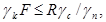
где
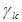
при расчетах по предельным состояниям первой группы - для основного сочетания нагрузок и воздействий в период нормальной эксплуатации 1,0
то же, для периода строительства и ремонта 0,96
для особого сочетания нагрузок и воздействий 0,90
при расчетах по предельным состояниям второй группы 1,0
F - расчетное значение обобщенного силового воздействия (сила, момент, напряжение), деформации или другого параметра, по которому производится оценка предельного состояния;
R - расчетов значение обобщенной несущей способности, деформации или другого параметра, устанавливаемого нормами проектирования;
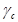
 - коэффициент
надежности по ответственности (назначению) сооружения, учитывающий
капитальность и значимость последствий при наступлении тех или иных предельных
состояний;
- коэффициент
надежности по ответственности (назначению) сооружения, учитывающий
капитальность и значимость последствий при наступлении тех или иных предельных
состояний;
при расчетах по предельным состояниям первой группы принимается для класса сооружения:
I .................. 1,25
II.................. 1,20
III................. 1,15
IV................. 1.10
при расчетах по предельным состояниям второй группы  следует
принимать равным 1,0;
следует
принимать равным 1,0;
при расчете устойчивости естественных склонов  следует
принимать как для класса рядом расположенного проектируемого сооружения.
следует
принимать как для класса рядом расположенного проектируемого сооружения.
2.3. Значения коэффициентов надежности по материалам 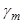 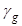
В некоторых случаях расчетные сопротивления материалов и грунтов определяются после статистической обработки результатов экспериментальных исследований.
2.4. Расчетное значение нагрузки определяется
умножением нормативного значения нагрузки на соответствующий коэффициент
надежности по нагрузке 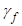
Нормативные значения нагрузок следует определять по СНиП на проектирование отдельных видов гидротехнических сооружений, их конструкций и оснований.
Значения коэффициентов надежности по нагрузке при расчетах по предельным состояниям первой группы следует принимать в соответствии с обязательным приложением 3.
2.5. Расчеты гидротехнических сооружений, их
конструкций и оснований по предельным состояниям второй группы следует
производить с коэффициентом надежности по нагрузке 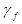 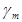 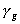
2.6. Методы расчета гидротехнических сооружений устанавливаются соответствующими нормативными документами по проектированию отдельных видов конструкций и сооружений.
Расчет конструкций и сооружений в необходимых случаях следует производить с учетом нелинейных и неупругих деформаций, влияния трещин и неоднородности материалов.
2.7. Нагрузки и воздействия на гидротехнические сооружения подразделяются на постоянные и временные (длительные, кратковременные и особые).
Перечень нагрузок и воздействий на гидротехнические сооружения приведен в рекомендуемом приложении 4.
В необходимых случаях дополнительно следует учитывать нагрузки и воздействия, указанные в СТ СЭВ 1407-78. Перечень нагрузок и воздействий и их сочетаний, подлежащих учету при расчетах отдельных видов гидротехнических сооружений, их конструкций и оснований, следует принимать по соответствующим строительным нормам и правилам.
Основные сочетания включают постоянные, временные длительные и кратковременные нагрузки и воздействия. Особые сочетания включают постоянные, временные длительные, кратковременные и одну (одно) из особых нагрузок и воздействий.
Нагрузки и воздействия необходимо принимать в наиболее неблагоприятных, но реально для рассматриваемого расчетного случая сочетания отдельно для строительного и эксплуатационного периодов и расчетного ремонтного случая.
2.9. При проектировании постоянных речных гидротехнических сооружений расчетные максимальные расходы воды надлежит принимать исходя из ежегодной вероятности превышения (обеспеченности), устанавливаемой в зависимости от класса сооружений для двух расчетных случаев - основного и поверочного - по табл. 1. При этом расчетные гидрологические характеристики следует определять по СНиП 2.01.14-83.
Таблица 1
|
Ежегодная вероятность превышения Р, %, расчетных максимальных расходов воды в зависимости от класса сооружения |
||||
|
I |
II |
III |
IV |
|
|
Основной |
0,1 |
1,0 |
3,0 |
5,0 |
|
Поверочный |
0,01* |
0,1 |
0,5 |
1,0 |
* С учетом гарантированной поправки , %, в соответствии со СНиП 2.01.14-83.
2.10. Расчетный расход воды, подлежащий пропуску в процессе эксплуатации через постоянные водопропускные сооружения гидроузла, следует определять исходя из расчетного максимального расхода, полученного в соответствии с п. 2.9, с учетом трансформации его проектируемыми для данного гидротехнического сооружения или действующими водохранилищами и изменения условий формирования стока, вызванного хозяйственной деятельностью в бассейне реки.
2.11. Пропуск расчетного расхода воды для основного расчетного случая должен обеспечиваться, как правило, при нормальном подпорном уровне (НПУ) верхнего бьефа через:
эксплуатационные водосбросные устройства при полном их открытии;
все гидротурбины ГЭС;
другие водопропускные сооружения при нормальном режиме их эксплуатации.
Нагрузки и воздействия, соответствующие основному расчетному случаю, необходимо учитывать в составе основного сочетания нагрузок согласно п. 2.8.
Пропуск расходов воды основного расчетного случая, в том числе через нерегулируемые водосбросы (без затворов), допускается осуществлять и при уровнях верхнего бьефа, отличающихся от НПУ. Нагрузки и воздействия, соответствующие уровням выше НПУ, следует учитывать в составе основного сочетания нагрузок и воздействий, а для сооружений, предназначенных для борьбы с наводнениями, - при соответствующем обосновании в составе особого сочетания нагрузок и воздействий.
уменьшение выработки электроэнергии ГЭС;
нарушение нормальной работы водозаборных сооружений, не приводящее к созданию аварийных ситуаций на объектах - потребителях воды;
повреждение резервных водосбросов, не снижающее надежности основных сооружений;
пропуск воды через водоводы замкнутого поперечного сечения при переменных режимах, не приводящий к разрушению водоводов;
размыв русла и береговых склонов в нижнем бьефе гидроузла, не угрожающий разрушением основных сооружений, селитебных территорий и территорий предприятий, последствия которого могут быть устранены после пропуска паводка.
Нагрузки и воздействия, соответствующие поверочному расчетному случаю, необходимо учитывать в составе особого сочетания нагрузок согласно п. 2.8.
2.13. На реках с каскадным расположением гидроузлов расчетный максимальный расход воды для проектируемого гидроузла следует определять с учетом его класса, расположения в каскаде, пропускной способности вышерасположенного гидроузла при НПУ и ФПУ, а также с учетом правил эксплуатации гидросооружений и водохранилищ каскада, величины боковой приточности на примыкающих к гидроузлу участках верхнего бьефа, принимая при этом расчетные расходы в соответствии с классом проектируемого гидроузла.
Независимо от класса сооружений гидроузлов, расположенных в каскаде, пропуск расхода воды основного расчетного случая не должен приводить к нарушению нормальной эксплуатации основных гидротехнических сооружений нижерасположенных гидроузлов.
в случае, если класс основных гидротехнических сооружений проектируемого гидроузла ниже класса сооружений вышерасположенного гидроузла, допускается пропуск расчетного расхода воды поверочного расчетного случая через проектируемый гидроузел обеспечивать путем увеличения его водопропускной способности без повышения класса.
2.14. Для постоянных гидротехнических сооружений I-III классов в период их временной эксплуатации в ходе строительства ежегодные вероятности превышения расчетных максимальных расходов воды следует принимать по табл. 1 в зависимости от класса сооружений пускового комплекса.
Учитывая ограниченную длительность временной эксплуатации гидротехнических сооружений, расчетные максимальные расходы воды, принятые для пускового комплекса, при надлежащем обосновании допускается понижать, при этом расчет вероятности превышения максимального расхода воды для этого периода можно выполнять в соответствии с рекомендуемым приложением 5.
2.15.* При проектировании временных гидротехнических сооружений расчетные максимальные расходы надлежит принимать исходя из ежегодной вероятности превышения (обеспеченности), устанавливаемой в зависимости от класса и срока эксплуатации сооружений для основного расчетного случая. При этом для временных гидротехнических сооружений IV класса ежегодную расчетную вероятность превышения расчетных максимальных расходов воды следует принимать равной:
при сроке эксплуатации: до 3-х лет - 10 %
более 3-х лет - 5 %
а для временных гидротехнических сооружений III класса:
при сроке эксплуатации: до 2-х лет - 10 %
более 2-х лет - 3 %
2.16. В строительный период следует учитывать возможность повышения уровня воды против расчетного из-за возникновения заторных или зажорных явлений.
2.17. Для малых ГЭС, не входящих в состав комплексного гидроузла, расчетные максимальные расходы воды надлежит определять в соответствии с п. 2.9 по основному расчетному случаю. На период паводка при соответствующем обосновании допускается прекращение выработки электроэнергии на малых ГЭС.
3. ПЛОТИНЫ
3.1. Тип и конструкцию плотины надлежит выбирать на основании технико-экономического сравнения вариантов в зависимости от ее функционального назначения, инженерно-геологических (в том числе наличия вечной мерзлоты), топографических, гидрологических и климатических условий, с учетом сейсмичности района, компоновки гидроузла, параметров сооружения, схемы организации производства работ, наличия местных строительных материалов, сроков строительства и условий эксплуатации плотины.
3.2. Плотины из грунтовых материалов следует применять, как правило, для глухих участков напорного фронта гидроузлов.
Бетонные плотины следует применять преимущественно для створов со скальным основанием для водосбросных участков напорного фронта гидроузлов.
Железобетонные плотины следует применять преимущественно для створов с нескальным и вечномерзлым нескальным основаниями с оттаиванием для водосбросных участков напорного фронта гидроузлов.
3.3. В условиях скальных ущелий в зависимости от геологических условий в створе плотины следует рассматривать возможность строительства арочных плотин, пространственно работающих бетонных гравитационных плотин или плотин из грунтовых материалов.
3.4. При выборе вида бетонных или железобетонных плотин следует рассматривать целесообразность применения различных облегченных конструкций, в том числе гравитационных с расширенными швами и полостями, совмещенных со зданием ГЭС, контрфорсных с анкеровкой в основание.
3.5. При выборе конструкции дамб следует отдавать предпочтение однородным насыпным и намывным сооружениям.
3.6. Плотины, поддерживающие напор лишь в меженный период, при соответствующем обосновании допускается проектировать затапливаемыми.
4. ГИДРОЭЛЕКТРОСТАНЦИИ, ГИДРОАККУМУЛИРУЮЩИЕ ЭЛЕКТРОСТАНЦИИ, НАСОСНЫЕ СТАНЦИИ И МАЛЫЕ ГИДРОЭЛЕКТРОСТАНЦИИ
4.1. Выбор типа здания гидроэлектростанции (ГЭС), гидроаккумулирующей электростанции (ГАЭС), насосной станции (НС) следует производить на основании сравнения технико-экономических показателей вариантов и с учетом:
обеспечения высокой эффективности работы станции, в том числе основного и вспомогательного оборудования;
обеспечения надежности работы и удобства постоянной и временной эксплуатации сооружений и оборудования;
величины напора на сооружения и выбранного технологического оборудования;
положения станционного здания в гидроузле и типа основных подпорных сооружений;
вида грунтов основания;
условий и методов производства строительно-монтажных и ремонтно-восстановительных работ.
4.2. При проектировании зданий русловых и приплотинных ГЭС необходимо рассматривать не совмещенные и совмещенные с водосбросными устройствами (с поверхностными или напорными водосбросами) компоновки как с вертикальными, так и с горизонтальными гидроагрегатами. Для горных условий с расположением здания ГЭС в узком ущелье целесообразно рассматривать двухрядное или иное расположение гидроагрегатов.
Для деривационных ГЭС следует проектировать отдельно стоящие здания с открытым, подземным или шахтным расположением машинного зала, с различным расположением гидроагрегатов (одно- или двухрядным).
4.3. Компоновочные решения строительной гидротехнической части зданий ГЭС, ГАЭС и НС должны предусматривать разбивку здания на агрегатные секции, разделенные температурно-осадочными швами. Размеры секций следует назначать в зависимости от габаритов агрегата, вида грунта основания, конструктивного решения строительной части.
При надлежащем обосновании допускается принимать подводную часть зданий ГЭС, ГАЭС и НС неразрезной конструкции для любых оснований.
Монтажную площадку, как правило, следует отделять от основного здания станции температурным или температурно-осадочным швом. Размеры монтажной площадки необходимо принимать минимальными и выбирать из расчета раскладки одного монтируемого агрегата и главного повышающего трансформатора. При этом следует учитывать возможность использования для монтажных работ части машинного зала. В подземных зданиях необходимо предусматривать возможность сокращения площади монтажной площадки за счет использования площадей на дневной поверхности.
Для ГАЭС, как правило, агрегаты следует размещать в створе напорных водоводов. При расположении здания ГАЭС на нескальном основании надлежит рассматривать компоновки станций с наименьшей подрезкой естественных склонов, на которых укладываются напорные трубопроводы, обеспечивая устойчивость склонов как в строительный, так и в эксплуатационный период.
4.4. В водоприемниках зданий ГЭС надлежит предусматривать пазы для установки сороудерживающих решеток, аварийно-ремонтных и ремонтных затворов.
На выходных отверстиях отсасывающих труб следует устраивать пазы для установки переносных ремонтных заграждений.
В совмещенных зданиях ГЭС на входных, а для напорных водосбросов - и на выходных отверстиях необходимо предусматривать устройство пазов для установки основных, аварийно-ремонтных и ремонтных затворов. Местоположение затворов надлежит определять в зависимости от типа и конструкции водосброса.
Водоприемники верховых бассейнов ГАЭС и НС должны иметь пазы для установки аварийно-ремонтных и ремонтных затворов, а также заградительных решеток.
Входные отверстия всасывающих труб ГАЭС и НС должны иметь пазы для ремонтных затворов и сороудерживающих решеток. Пазы решеток, как правило, следует совмещать с пазами ремонтных затворов.
Для НС на выходных отверстиях следует предусматривать установку аварийно-ремонтных затворов или сифонов.
При наличии закрытой напорной или безнапорной деривации необходимо предусматривать возможность ее опорожнения для ремонта. Размеры прямоугольных отверстий водопропускных сооружений ГЭС, ГАЭС и НС, перекрываемых затворами, следует принимать типовыми в соответствии с обязательным приложением 6.
4.5. Размеры подводной части зданий ГЭС, ГАЭС и НС надлежит назначать минимально необходимыми исходя из габаритов проточной части агрегата, технологических требований по размещению и эксплуатации основного и вспомогательного оборудования, а также с учетом габаритов строительных конструкций.
Размеры производственных, служебных и вспомогательных помещений в здании ГЭС (ГАЭС, НС) не должны вызывать увеличения размеров подводной части. Для размещения вспомогательных помещений следует использовать объемы, имеющиеся над проточной частью. Элементы конструкций подводной части здания ГЭС, ГАЭС и НС подлежат унификации по всем агрегатным секциям.
4.6. Для осмотра и ремонта турбинных и насосных камер (с насосами подачей свыше 100 м3/с), отсасывающих и всасывающих труб в подводной части здания следует предусматривать служебные галереи, проходы, лазы и лифты (при глубине 12 м и более).
В начале и конце галереи надлежит предусматривать выходы, изолированные от других помещений и имеющие лестничные клетки.
Верх лестничных клеток следует размещать выше максимального расчетного уровня воды нижнего бьефа на 0,5 м. При этом должны быть предусмотрены герметичные люки или двери, исключающие возможность затопления галерей.
4.7. В случаях, когда напорные водоводы НС, приплотинных и деривационных ГЭС и ГАЭС выполняются открытыми стальными или деревянными, следует предусматривать меры по защите зданий станции от последствий внезапного разрушения трубопровода. Для открытых железобетонных, сталежелезобетонных и туннельных водоводов таких мер предусматривать не требуется.
4.8. ГАЭС и НС, близкие по капорам, следует унифицировать по основному турбинному и насосному оборудованию и по конструктивному решению.
4.9. В горных районах при проектировании ГЭС, ГАЭС и НС выбор подземного или открытого типа турбинных водоводов и деривационных туннелей должен быть обоснован технико-экономическим сопоставлением.
Помещения подсобно-производственного назначения, в том числе масляного хозяйства, при отсутствии специальных требований следует выносить на дневную поверхность.
При проектировании подземных зданий станции необходимо предусматривать сообщение с дневной поверхностью по транспортным галереям или шахтам, через которые осуществляется механизированная транспортировка оборудования, материалов и перевозка эксплуатационного персонала. Для эксплуатационного персонала должны быть предусмотрены пешеходные дороги или лестницы, дублирующие выход на дневную поверхность.
4.10. Транспортные галереи и шахты должны примыкать к монтажной площадке. Кабельные коммуникации необходимо совмещать с транспортными шахтами и галереями.
4.11. Гидравлический режим в отводящем туннеле при всех уровнях воды в нижнем бьефе необходимо поддерживать только напорным или безнапорным. Переходные режимы от напорного к безнапорному и наоборот в отводящем туннеле допускаются кратковременными при надлежащем обосновании. В отводящие безнапорные туннели необходимо предусматривать подвод воздуха при любых режимах работы.
4.12. При проектировании насосных станций должна быть предусмотрена подача воды в заданном объеме и в соответствии с графиками водоподачи при всех режимах работы системы водоснабжения.
Объем и графики водоподачи необходимо определять водохозяйственным балансом системы учетом:
расчетных параметров проектируемой системы;
гидрологических параметров источника водоснабжения;
обеспечения необходимых расходов воды в водотоке ниже водозабора.
4.13. Число резервных агрегатов на насосной станции необходимо устанавливать в зависимости от категории надежности подачи воды и числа агрегатов в соответствии с требованиями соответствующих строительных норм и правил.
4.14. При назначении режима работы насосной станции большой мощности (свыше 10-15 тыс. кВт) следует рассматривать возможность использования ее (частично или на полную мощность) в качестве потребителя-регулятора мощности энергосистемы, а также для работы в турбинном режиме.
4.15. При проектировании водовыпускных сооружений насосных станций следует предусматривать плавный выпуск воды в канал с растеканием потока, перераспределением и уменьшением скоростей течения воды.
На водовыпускном сооружении необходимо предусматривать установку оборудования, обеспечивающего автоматическое отключение трубопроводов от канала (обратных клапанов, затворов, клапанов срыва вакуума и т.п.).
МАЛЫЕ ГЭС
4.16. К малым следует относить ГЭС, установленная мощность которых не превышает 30 МВт при диаметре рабочего колеса до 3 м.
4.17. Следует различать два вида малых ГЭС: работающие в системе централизованного энергоснабжения и изолированные от энергосистемы, обеспечивающие районное энергоснабжение. Установка резервных гидроагрегатов должна быть обоснована.
Для малых ГЭС, изолированных от энергосистемы, гарантированную мощность необходимо определять на основании энерго-экономических расчетов.
4.18. При проектировании малых ГЭС, сооружаемых в составе комплексных гидроузлов, режим их работы надлежит увязывать с ведущими водопользователями.
4.19. При проектировании малых ГЭС необходимо применять унифицированные проекты, учитывающие требования:
максимальной типизации технических характеристик малых ГЭС, их оборудования и строительной части;
высокой заводской готовности технологического оборудования;
широкого применения индустриальных строительных конструкций и изделий, местных (грунтовых и каменных) материалов;
монтажа оборудования и конструкций, как правило, с использованием автомобильных и гусеничных кранов.
4.20. Малые ГЭС должны быть автоматизированными, с дистанционным управлением.
4.21. Габариты машинного зала малых ГЭС следует назначать минимальными исходя, как правило, из условий размещения технологического оборудования. Следует предусматривать возможность использования открытых монтажных площадок.
4.22. Водоприемники малых ГЭС должны быть, как правило, оборудованы аварийно-ремонтными затворами и сороудерживающими решетками. Со стороны нижнего бьефа на выходах отсасывающих труб должен быть предусмотрен паз для ремонтного переносного заграждения.
Следует рассматривать целесообразность установки аварийно-ремонтных затворов со стороны нижнего бьефа взамен установки их на водоприемнике.
4.23. Деривационные водоводы малых ГЭС, как правило, должны быть поверхностными в виде открытых каналов или лотков, или труб заводского изготовления.
5. ВОДОСБРОСНЫЕ, ВОДОСПУСКНЫЕ И ВОДОВЫПУСКНЫЕ СООРУЖЕНИЯ
5.1. Водосбросные, водоспускные и водовыпускные сооружения должны обеспечивать выполнение следующих функций:
а) водосбросные сооружения:
пропуск расходов половодья и дождевых паводков и других неиспользуемых расходов воды во избежание превышения установленных проектом уровней воды в верхнем бьефе;
пропуск льда, шуги, мусора и других плавающих предметов из верхнего бьефа в нижний, если это требование предъявляется по условиям эксплуатации гидроузла;
б) водоспускные сооружения:
полное или частичное опорожнение водохранилища или канала;
промыв наносов;
в) водовыпускные сооружения - осуществление попусков воды из водохранилища или канала.
Включение в состав гидроузла перечисленных сооружений или части их необходимо устанавливать в соответствии с конкретными условиями и назначением гидроузла. Совмещение различных функций в одном сооружении следует предусматривать в соответствии с п. 1.7.
5.2. При проектировании водосбросных, водоспускных и водовыпускных сооружений надлежит рассматривать возможность их использования для пропуска строительных расходов.
5.3. Выбор типа, числа и размеров поперечного сечения отверстий водосбросных сооружений необходимо производить исходя из требований пропуска расчетного расхода воды основного расчетного случая.
Для поверочного расчетного случая пропуск расчетного расхода воды следует обеспечивать в соответствии с п. 2.12.
5.4. Пролет (ширину) и высоту прямоугольных отверстий водопропускных сооружений, перекрываемых затворами, следует назначать в соответствии с обязательным приложением 6.
5.5. Назначение удельного расхода воды в нижнем бьефе водосбросных, водоспускных и водовыпускных сооружений, выбор их конструкции, режима сопряжения бьефов, конструкций водобоев, рисберм, креплений берегов, раздельных и сопрягающих стен надлежит обосновывать технико-экономическим сравнением вариантов.
При выборе компоновки и проектировании водопропускных сооружений и их сопряжения с нижним бьефом надлежит обеспечивать защиту сооружений гидроузла от опасного размыва их оснований, защиту зданий ГЭС и судоходных каналов от воздействий сбросного потока и предупреждение деформаций русла, неблагоприятных для эксплуатации этих сооружений. Для элементов водосбросных сооружений необходимо учитывать также гидродинамические воздействия, а в случае их обтекания потоком с большими скоростями - явления кавитации и истирания наносами.
5.6. Конструкции водосбросных сооружений и элементы их сопряжения с верхним и нижним бьефами, принятые для основного расчетного случая, подлежат проверке:
на поверочный расчетный случай;
на случай полного открытия одного пролета водосброса (водовыпуска, водопуска) при закрытых остальных и нормальной работе ГЭС (80 % установленной мощности). При отсутствии ГЭС за расчетный уровень нижнего бьефа следует принимать уровень, минимально допустимый по санитарным и техническим требованиям. При этом следует соблюдать требования п. 2.12.
Для низконапорных плотин транспортных гидроузлов, на которых расчетный напор не превышает колебаний уровня воды в незарегулированном состоянии (бытовых), проверку на случай полного открытия одного пролета водосброса (водовыпуска) допускается не производить, но в этом случае обязательно должны быть предусмотрены мероприятия (блокировка затворов и т. п.), исключающие возможность внезапного открытия одного пролета.
5.7. При проектировании водосбросов (водоспусков, водовыпусков) следует разрабатывать схемы маневрирования затворами. При этом, как правило, рекомендуемые схемы маневрирования затворами не должны приводить в нижнем бьефе к необходимости осуществления дополнительных мероприятий по защите сооружений и прилегающих к ним участков русла от размыва по сравнению с расчетными случаями.
Для низконапорных плотин транспортных гидроузлов конструкции нижнего бьефа необходимо принимать с учетом схемы маневрирования затворами, принятой по условиям эксплуатации.
5.8. При компоновке комплексного гидроузла необходимо обеспечивать гидравлические условия в верхнем и нижнем бьефах, не создающие затруднения для пропуска строительных расходов и для эксплуатации входящих в его состав сооружений (ГЭС, шлюзов, водозаборных сооружений, водоприемников, рыбопропускных сооружений и т. д.).
5.9.* При проектировании водосбросов, водоспусков и водовыпусков надлежит предусматривать основные и аварийно-ремонтные затворы.
Перед основными плоскими поверхностными затворами, а также перед основными затворами эксплуатационных и строительных глубинных водосбросов, водоспусков и водовыпусков (независимо от типа основных затворов) следует предусматривать аварийно-ремонтные затворы.
При невозможности опорожнить вход в постоянные глубинные водосбросы следует предусматривать установку на входном оголовке помимо основных и аварийно-ремонтных также ремонтных затворов (например, прислонных).
На поверхностных водосбросах с несколькими однотипными отверстиями допускается применять переносные аварийно-ремонтные (ремонтные) плоские затворы; число их может быть меньше числа отверстий.
В случае расположения порогов глубинных водосбросов ниже уровня нижнего бьефа за основными следует предусматривать переносные ремонтные затворы в выходном сечении водосброса.
5.10. При выборе типов затворов и подъемных механизмов надлежит учитывать скорость нарастания весенних половодий и дождевых паводков, аккумулирующую способность бьефов, а также необходимость обеспечения минимального расхода воды в нижнем бьефе, в том числе и в случае внезапного отключения части турбин или всей ГЭС.
5.11. При наличии глубинного водосброса с крупными плоскими затворами (площадью свыше 60 м2) и необходимости осуществлять частые попуски с расходами существенно меньшими, чем пропускная способность одного отверстия водосброса, следует предусматривать устройство специального водовыпускного отверстия, оборудованного сегментным или телескопическим затвором.
6. ВОДОЗАБОРНЫЕ СООРУЖЕНИЯ И ОТСТОЙНИКИ
ВОДОЗАБОРНЫЕ СООРУЖЕНИЯ
6.1. Водозаборные сооружения должны обеспечивать:
бесперебойную подачу воды в водоводы ГЭС, ГАЭС и НС, магистральные каналы оросительных систем и другим водопользователям;
прекращение поступления воды в водоводы и каналы при их плановом осмотре, ремонте в соответствии с режимом эксплуатации и в случае аварии.
Для защиты водоводов и каналов от попадания в них влекомых наносов, плавающих предметов и мусора, топляков, льда, шуги и т. п. следует предусматривать забральные балки, сороудерживающие решетки, запани, шугосбросы, пороги, промывные галереи, отстойники, а также мероприятия по удалению мусора из воды и т. п. Забор воды в местах скопления личинок дрейсены (если не предусмотрены мероприятия по уничтожению дрейсены) не допускается.
На ГЭС с безнапорными деривационными водоводами пропуск шуги следует предусматривать преимущественно через турбины (за исключением случая оборудования станции ковшовыми турбинами), при этом следует предусматривать электрообогрев решеток в напорном бассейне.
6.2. Состав, конструкцию и компоновку водозаборного сооружения необходимо выбирать в соответствии с его назначением и в зависимости от типа водовода, характера водозабора, условий эксплуатации, природных условий, гидрологического режима водоема и водотока, морфологии берегов и т. п.
Необходимо обеспечивать поступление воды в напорные трубопроводы без засасывания воздуха и с минимальными потерями напора.
Водоприемник, как правило, следует проектировать из нескольких секций для обеспечения возможности отключения любой секции для ремонта или очистки.
6.3. Водозаборы питьевого назначения из водохранилищ следует располагать с учетом переработки береговой линии, фактического и прогнозируемого качества воды на возможных участках их размещения, интенсивности аэрации и сгонно-нагонных течений, а также количественного содержания в поверхностных токах воды биомассы, в том числе и водорослей.
6.4. Выбор типа водозабора следует производить в зависимости от уровней воды в реке и уровней, требуемых в проектируемом магистральном канале, с учетом топографических, гидрологических и геологических условий.
В случае недостаточности превышения уровня воды в реке в створе водозабора над уровнем воды в канале следует предусматривать плотинный водозабор. Допускается заменять плотинный водозабор водозабором с механическим водоподъемом насосными станциями.
Величину максимального расхода воды в реке в естественном состоянии надлежит устанавливать в соответствии с требованиями п. 2.9. За расчетный уровень следует принимать: при бесплотинном водозаборе - бытовой или зарегулированный вышерасположенным водохранилищем уровень воды при прохождении расчетного максимального расхода воды основного расчетного случая с учетом русловых процессов; при плотинном водозаборе - уровень воды в верхнем бьефе при пропуске расчетного максимального расхода воды, соответствующего поверочному расчетному случаю.
6.5. В водоприемниках саморегулирующихся водоводов необходимо предусматривать аварийно-ремонтные затворы.
В водоприемниках с поверхностным забором воды в канал, проходящий целиком в выемках, и в глубинных водоприемниках с напорной деривацией, имеющей в конце камеру затворов, допускается устанавливать только ремонтные затворы.
В водоприемниках несаморегулирующихся водоводов (в том числе и в глубинных водоприемниках безнапорных водоводов) необходимо предусматривать основные затворы, приспособленные для непрерывного регулирования под напором и оборудованные индивидуальными подъемными механизмами, а также аварийно-ремонтные затворы.
6.6. Защиту от попадания в водоводы влекомых наносов следует осуществлять путем обеспечения забора воды из верхних осветленных слоев потока, а также устройством на входе в водоприемник: высоких порогов с донными промывными отверстиями; косо направленных донных порогов и экранирующих стенок; водоприемных ковшей; струенаправляющих щитов и шпор; регуляционных и выправительных сооружений; кроме того, проведением других мероприятий, прошедших проверку в условиях эксплуатации построенных водозаборных гидроузлов.
Конструкция и размеры водозаборных сооружений из источников небольшой мощности должны обеспечивать их нормальную работу в условиях движения в потоке воды отмершей водной или пустынно-степной растительности, заносимой в источник ветром.
6.7. При невозможности пропуска льда и шуги через турбины в зависимости от ледошугового режима водотока и условий эксплуатации надлежит предусматривать:
создание условий для образования ледяного покрова в верхнем бьефе при наличии соответствующих температурного и скоростного режимов водотока;
задержание шуги и поверхностного льда в верхнем бьефе;
сброс шуги и поверхностного льда в головном узле через плотину;
сброс шуги через шугосбросные сооружения на канале или в напорном бассейне при отсутствии возможности задержания шуги в верхнем бьефе, а также в случае опасности зажора шуги в нижнем бьефе.
При сбросе шуги и льда в нижний бьеф следует предусматривать также пропуск необходимых расходов, предотвращающих образование зажоров.
6.8. Водозаборные сооружения должны обеспечивать необходимое осветление забираемой воды. Для этого необходимо предусматривать в составе гидроузла наносоперехватывающие и наносоулавливающие сооружения и устройства - отстойники, гравиеловки, песколовки.
6.9. При проектировании водозаборных сооружений необходимо соблюдать также требования разд. 10.
ОТСТОЙНИКИ
6.10. Наносоперехватывающие и наносоулавливающие сооружения и устройства должны обеспечивать:
осветление воды путем осаждения или перехвата частиц наносов, крупность которых превышает величину, обоснованную техническими и экономическими расчетами;
бесперебойную подачу осветленной воды в водоводы в соответствии с графиками водопотребления;
удаление наносов, отложившихся в камере отстойника.
Кроме того, наносоперехватывающие и наносоулавливающие сооружения и устройства оросительных систем должны удовлетворять следующим требованиям:
пропускать в оросительную сеть только те наносы, количество и крупность которых допустимы принятыми в проекте мероприятиями по защите оросительной системы от заиления;
обеспечивать степень осветления воды, не приводящую к размыву необлицованных каналов;
при благоприятных условиях обеспечивать возможность гидравлической промывки наносов, отложившихся в отстойнике.
6.11. В среднем и нижнем течениях рек при повышенном водоотборе сброс из отстойников в реку осевших наносов, как правило, не допускается. В этих условиях следует проектировать отстойники с удалением наносов в отвалы, которые необходимо размещать в виде карт и приводить в состояние, пригодное для сельскохозяйственного использования. Плодородный слой грунта из-под отвалов подлежит удалению и использованию при рекультивации.
6.12. Расчеты отстойников на каналах оросительных систем следует производить для состава наносов среднего по мутности года с последующей проверкой работоспособности запроектированного отстойника по году с максимальной мутностью с учетом режимов работы канала.
6.13. Выбор местоположения отстойника надлежит предусматривать в пределах головного узла или на магистральном (деривационном) канале с учетом:
геологических и топографических условий;
подхода воды к отстойнику, обеспечивающему осаждение наносов в камерах;
возможности удаления или складирования отложившихся в камерах наносов;
транспортирующей способности магистрального (деривационного) канала и реки в нижнем бьефе гидроузла.
6.14. Выбор типа отстойника (с непрерывным или периодическим промывом либо с механической очисткой) следует производить на основе технико-экономического сравнения строительных и эксплуатационных показателей отстойников с учетом следующих требований:
при достаточном гидравлическом уклоне промывного тракта и наличии свободных расходов воды необходимо применять отстойники только с гидравлической промывкой;
при отсутствии необходимого перепада для полной промывки отложений следует применять отстойники с комбинированной (механической и гидравлической) очисткой.
Однокамерные отстойники периодического промыва надлежит применять в случаях, когда допускается перерыв в подаче воды в водовод или оросительную сеть или кратковременная подача неосветленной воды.
7. ВОДОВОДЫ ЗАМКНУТОГО ПОПЕРЕЧНОГО СЕЧЕНИЯ И СООРУЖЕНИЯ НА НИХ
7.1. Водоводы замкнутого поперечного сечения ГЭС, ГАЭС и НС должны обеспечивать пропуск воды при всех режимах эксплуатации, предусмотренных проектом.
7.2. Трасса и продольный профиль напорных водоводов ГЭС, ГАЭС и НС, как правило, должны исключать возможность образования вакуума в водоводах при любом режиме работы.
7.3. При проектировании водоводов и сооружений на них следует выполнять гидравлические расчеты, а в отдельных случаях - и лабораторные исследования для определения потерь напора по длине водовода, наивысшего и наинизшего уровней воды в безнапорных водоводах при неравномерном и неустановившемся движении воды, наибольшего и наименьшего давления воды по длине напорного водовода с учетом гидравлического удара.
7.4. Для стальных и деревянных турбинных напорных водоводов ГЭС и ГАЭС, открытых по всей длине или на отдельных участках, следует предусматривать на водоприемнике установку аварийно-ремонтных затворов с индивидуальным приводом, обеспечивающих быстрое отключение напорного тракта в случае разрыва трубопровода. Перед аварийно-ремонтным затвором должен быть установлен ремонтный затвор. Кроме того, необходимо предусматривать защитные сооружения, предохраняющие здания ГЭС и ГАЭС от затопления.
7.5. Для трубопроводов, проходящих в теле плотины или в горном массиве, а также для сталежелезобетонных и железобетонных трубопроводов аварийно-ремонтные затворы и защитные сооружения допускается не предусматривать.
За аварийно-ремонтными затворами должен быть обеспечен подвод воздуха в трубопровод.
ГИДРОТЕХНИЧЕСКИЕ ТУННЕЛИ
7.6. Выбор трассы и типа туннеля (напорного или безнапорного), а также конструкции крепления и формы поперечного сечения следует выполнять на основе технико-экономического сравнения вариантов с учетом: общей компоновки гидроузла; глубины заложения от расчетной поверхности земли и величины напора; инженерно-геологических и гео-криологических условий; гидравлического режима туннеля; условий производства работ; влияния соседних подземных и наземных сооружений гидроузла.
7.7. В районах распространения вечномерзлых грунтов следует отдавать предпочтение туннелям по сравнению с открытыми водоводами. При этом помимо факторов, перечисленных в п. 7.8, следует учитывать температурный режим, криогенное строение вмещающего массива и их изменение в процессе строительства и эксплуатации туннеля.
7.9. При проектировании туннелей для пропуска эксплуатационных расходов воды следует рассматривать возможность их использования для пропуска строительных расходов воды.
ТРУБОПРОВОДЫ
7.10. Выбор типа и конструкции трубопровода следует производить на основе технико-экономического сопоставления вариантов с учетом назначения трубопровода, условий его монтажа и эксплуатации, общей компоновки сооружения, величины напора, грунтов основания. При одинаковых показателях различных вариантов предпочтение следует отдавать сталежелезобетонным и железобетонным конструкциям.
При проектировании трубопроводов на вечномерзлых, просадочных, обводненных и илистых грунтах, на заболоченных территориях следует, как правило, предусматривать наземную прокладку труб, а при необходимости - специальные мероприятия по укреплению грунтов основания.
7.11. При проектировании трубопровода наземной прокладки на нескальном основании по его длине следует предусматривать устройство компенсаторов (в том числе у водоприемников и зданий ГЭС, ГАЭС и НС), обеспечивающих независимые осадки участков трубопровода и их температурные деформации, или сплошную железобетонную фундаментную конструкцию, способную обеспечить равномерную осадку трубопровода.
7.12. Выбор конструкции трубопровода (размеров, армирования, материалов и т. п.) должен быть обоснован расчетом.
В необходимых случаях следует выполнять расчеты льдообразования на внутренней поверхности трубопровода. Во всех случаях, когда толщина льда, определяемая расчетом, превышает допустимую по условиям эксплуатации, следует предусматривать утепление трубопровода.
7.13. При проектировании трубопроводов следует предусматривать защиту от коррозии металла в соответствии с ГОСТ 9.015-74 и СНиП 2.03.11-85.
7.14. Во входных оголовках и на трассе трубопровода следует предусматривать устройства для предварительного наполнения трубопровода водой, а также для впуска и выпуска воздуха.
Радиус оси колена трубопровода, как правило, должен быть не менее трех диаметров трубопровода.
7.15. К железобетонным и сталежелезобетонным трубопроводам необходимо предъявлять требование ограничения ширины раскрытия трещин, обеспечивающее долговечность конструкции по условиям коррозии арматуры и бетона, а также достаточную фильтрационную непроницаемость.
БАССЕЙНЫ СУТОЧНОГО РЕГУЛИРОВАНИЯ, НАПОРНЫЕ БАССЕЙНЫ ГЭС, ГАЭС И НС
7.16. Бассейны суточного регулирования деривационных ГЭС надлежит предусматривать при отсутствии достаточных регулирующих емкостей в верхнем бьефе плотин и в деривационных водоводах, если это обосновано технико-экономическими расчетами.
7.17. Бассейн суточного регулирования надлежит располагать на трассе деривации или на ответвлении от нее возможно ближе к напорному бассейну, используя по возможности долины рек и естественные котловины и учитывая при этом условия фильтрации из бассейнов и возможность занесения их наносами. Следует также рассматривать целесообразность совмещения бассейна суточного регулирования с напорным бассейном.
7.18. При проектировании бассейнов суточного регулирования ГЭС с пиковым режимом работы, а также напорных бассейнов ГАЭС надлежит учитывать влияние резкого колебания уровня воды и намерзающего на откосах льда на устойчивость ограждающих земляных сооружений, прочность и устойчивость их облицовок.
7.19. При проектировании напорного бассейна необходимо предусматривать:
сброс избыточной воды, а также плавающих предметов, сора, льда и шуги;
удаление отложившихся в бассейне наносов;
устройства для впуска воздуха в турбинные водоводы при их аварийном или эксплуатационном опорожнении и выпуска воздуха из водоводов при их наполнении водой.
7.20. При установлении максимальных отметок в напорных бассейнах следует учитывать волну подпора, образующуюся при сбросах нагрузки ГЭС и ГАЭС.
Минимальный эксплуатационный уровень воды в напорном бассейне надлежит определять с учетом волн излива при неустановившемся режиме при включении наибольшей возможной по условиям эксплуатации нагрузки ГЭС и ГАЭС.
7.21. При проектировании деривационных водоводов надлежит предусматривать при напорном бассейне водосбросные сооружения автоматического действия (водослив без затворов, сифонный водосброс, водосброс с автоматическими затворами гидравлического действия и т.п.), обеспечивающие пропуск всего расчетного расхода воды ГЭС или подачу воды нижерасположенным водопотребителям в случае остановки ГЭС с учетом наличия у водопотребителей запасных емкостей.
7.22. При расположении напорных бассейнов на нескальных основаниях (особенно на просадочных грунтах) надлежит предусматривать мероприятия по предотвращению неравномерных осадок, оползневых явлений, которые могут возникнуть вследствие фильтрации воды из бассейна.
7.23. При проектировании напорного бассейна НС необходимо предусматривать мероприятия, обеспечивающие:
гашение кинетической энергии воды, вытекающей из напорных трубопроводов;
удаление отложившихся в напорном бассейне наносов;
плавное сопряжение напорного бассейна с каналом или с отходящими от него водоводами.
7.24. Сопряжение напорных трубопроводов с напорным бассейном может выполняться:
по схеме истечения воды из напорных трубопроводов под уровень воды в напорном бассейне с установкой в начале каждого напорного трубопровода обратного клапана (для предотвращения обратного тока воды при остановке насоса) и задвижки (для отключения напорного трубопровода при ремонте клапана);
с помощью сифонных водовыпусков, каждый из которых снабжен автоматическим воздушным клапаном для срыва вакуума в сифоне при остановке насоса и предотвращения обратного тока воды из напорного бассейна к насосу.
Выбор того или иного варианта должен быть обоснован технико-экономическим сравнением.
УРАВНИТЕЛЬНЫЕ РЕЗЕРВУАРЫ
7.25. Необходимость устройства уравнительного резервуара, в том числе на отводящей напорной деривации, должна быть обоснована расчетами гидравлического удара и анализом условий работы агрегатов.
7.26. Гидравлический расчет переходных режимов в уравнительном резервуаре должен быть произведен на выключение (сброс) и включение (наброс) нагрузки.
Наибольшее повышение уровня воды в уравнительном резервуаре необходимо определять при полном сбросе нагрузки всех агрегатов ГЭС. При этом уровень воды в верхнем бьефе следует принимать наивысшим, а потери напора - наименьшими из возможных.
Наибольшее понижение уровня воды в уравнительном резервуаре необходимо определять при наибольшем по условиям эксплуатации увеличении нагрузки. При этом уровень воды в верхнем бьефе надлежит принимать наинизшим, а потери напора - наибольшими из возможных.
8. КАНАЛЫ ОБЩИЕ ТРЕБОВАНИЯ
8.1. Выбор трассы, параметров, типа канала должен быть обоснован сопоставлением вариантов с учетом пропускной (судопропускной) способности, объемов работ, потерь воды и напора, предусматриваемого оборудования, обеспечения безопасности судоходства, затрат на его эксплуатацию, требований охраны окружающей природной среды.
8.2. Каналы следует располагать в выемке или в полувыемке-полунасыпи. Трассирование каналов в насыпи допускается только на отдельных участках при специальном обосновании. Радиусы закругления на трассе каналов следует назначать с учетом недопущения размывов и обеспечения возможности пропуска судов, льда и шуги.
8.3. Для каналов следует предусматривать мероприятия по защите от подтопления и заболачивания территории вдоль трассы, а также от зарастания каналов водной растительностью.
8.4. При проектировании каналов в сложных условиях (в просадочных, пучинистых, набухающих грунтах и в грунтах, содержащих легко и среднерастворимые соли, на оползневых склонах, а также в местах возможного пересечения трассы канала селевым потоком) следует учитывать возможные изменения характеристик грунтов в процессе эксплуатации и в случае необходимости предусматривать специальные конструктивные и технологические мероприятия.
8.5. Скорости воды в каналах следует назначать на основе расчетов или экспериментальных исследований, как правило, по условию незаиляемости и неразмываемости их русла, с учетом переменного расхода воды, необходимости предотвращения ледовых и шуговых заторов и зажоров, забивки мусором и увеличения шероховатости дна и откосов вследствие зарастания водной растительностью и обрастания ракушкой.
8.6. Для защиты дна и откосов каналов от размыва и механического повреждения, а также уменьшения потерь на фильтрацию следует предусматривать устройство крепления и противофильтрационных элементов.
8.7. Заложение откосов каналов в любых грунтах должно быть обосновано расчетами их устойчивости.
8.8. При проектировании каналов следует предусматривать наносозащитные инженерные сооружения или увеличение размеров канала на величину уменьшения его размеров за период между дноуглубительными работами.
8.9. Превышение гребня ограждающих дамб и бровки берм над наивысшим уровнем воды в канале следует принимать в зависимости от его назначения, рода облицовки, расхода воды, высоты ветровой и судовой волн. Ширину гребня дамб и берм следует назначать исходя из требований эксплуатации с учетом условий производства работ.
8.10. При проектировании каналов следует рассматривать необходимость разделения каналов по длине на отдельные отсеки с устройством аварийно-ремонтных затворов и водосбросных сооружений для опорожнения отсеков. При соответствующем обосновании допускается устраивать одно водосбросное сооружение на несколько отсеков. Длину отсека необходимо назначать с учетом природных условий и эксплуатационных требований.
8.11. При проектировании каналов следует рассматривать целесообразность использования боковой приточности из постоянных водотоков, пересекающих трассу каналов.
При заборе воды из постоянного водотока необходимо обеспечивать сохранение санитарных расходов воды в нем.
8.12. В необходимых случаях следует учитывать возможность образования шуги и ледяного покрова на всей длине канала или его отдельных участках и рассматривать условия пропуска зимних расходов, обеспечивая при этом оптимальные условия эксплуатации на период ледостава и вскрытия ледяного покрова.
Ледоход по каналам, как правило, не допускается.
В необходимых случаях следует предусматривать мероприятия по предотвращению завалов каналов снегом.
8.13. Вдоль каналов следует предусматривать, как правило, устройство служебных (автомобильных) дорог для контроля состояния канала и сооружений на нем, а также ограждений в районах населенных пунктов.
8.14. Каналы следует, как правило, предохранять от разрушения дождевыми и талыми водами.
8.15. При пересечении трассы канала дюкерами и другими подземными сооружениями следует предусматривать мероприятия, гарантирующие эти сооружения от повреждения якорями судов, дноуглубительными снарядами и т. п.
КАНАЛЫ КОМПЛЕКСНОГО НАЗНАЧЕНИЯ
8.16. Проектирование каналов комплексного водохозяйственного назначения следует производить на основе прогноза потребности в воде надлежащего качества для отраслей народного хозяйства в районах, намечаемых к обслуживанию каналом.
8.17. При использовании боковой приточности из постоянных водотоков необходимо соблюдать следующие условия:
качественные показатели воды в створе водозаборов должны соответствовать нормативным требованиям;
количество твердого стока и его фракционный состав должны соответствовать транспортирующей способности канала.
8.18. Гидравлический расчет каналов необходимо производить с учетом нестационарных режимов, возникающих при изменении расходов и уровней воды, а также вызываемых ветровым нагоном, ветровыми волнами и волнами перемещения, образующимися при маневрировании затворами регулирующих гидросооружений, агрегатами насосных станций, судоходных шлюзов.
8.19. В местах расположения водозаборных сооружений на каналах следует рассматривать целесообразность устройства регулирующих водохранилищ.
8.20. На участках трассы каналов с неблагоприятными топографическими условиями (изрезанным рельефом местности), а также при наличии легкоразмываемых или просадочных грунтов следует рассматривать целесообразность устройства лотка.
СУДОХОДНЫЕ КАНАЛЫ
8.21. При проектировании судоходных каналов наряду с требованиями данного раздела следует учитывать требования пп. 13.1 и 13.2. Расчетные уровни и габариты судоходных каналов следует устанавливать в зависимости от расчетного судна и структуры планируемого судопотока в соответствии с обязательным приложением 7. Как правило, следует предусматривать двустороннее движение судов.
8.22. Якорные стоянки для судов необходимо предусматривать на прилегающих к каналу акваториях.
8.23. При проектировании подходных каналов судостроительных и судоремонтных предприятий необходимо учитывать специфические особенности условий их эксплуатации (малые протяженность, интенсивность использования, скорости перемещения судов и плавобъектов по каналу; возможность ожидания судостроительными и судоремонтными предприятиями благоприятных погодных условий и уровней воды для прохода плавсредств и пр.).
8.24. Для судов и плавобъектов, резко отличающихся по своему назначению, форме и конструкции, проектирование подходных каналов следует выполнять по индивидуальным техническим условиям, утвержденным в установленном порядке.
9. БЕРЕГОУКРЕПИТЕЛЬНЫЕ, ЗАЩИТНЫЕ, РЕГУЛЯЦИОННЫЕ И ОГРАДИТЕЛЬНЫЕ СООРУЖЕНИЯ
9.1. Берегоукрепительные, защитные, регуляционные и оградительные сооружения следует проектировать в зависимости от назначения и характера использования защищаемого участка с учетом регулирования речного стока, прогноза переработки береговой полосы или русла реки, перемещения наносов, волновых и ледовых воздействий, возможных оползневых явлений и пр. При этом в необходимых случаях должны быть учтены требования судоходства, лесосплава, водопользования, охраны окружающей природной среды, а также перспективного развития населенных пунктов и объектов народного хозяйства.
9.2. Берегоукрепительные, защитные, регуляционные и оградительные сооружения следует проектировать с учетом возможности их использования в народнохозяйственных и социальных целях (в качестве причальных, транспортных и других инженерных сооружений, для массового отдыха населения и спортивно-оздоровительных мероприятий).
9.3. Способы защиты и конструкции сооружений, применяемые для защиты от затопления и подтопления объектов народного хозяйства, следует проектировать согласно требованиям СНиП 2.06.15-85.
Вопросы противопаводковой защиты необходимо решать одновременно с проектированием сооружений для регулирования речного стока.
9.4. При выборе конструкций сооружений следует учитывать кроме их назначения наличие местных строительных материалов и возможные способы производства работ. Конструктивные типы берегоукрепительных сооружений и основные условия их применения приведены в рекомендуемом приложении 8. Допускается по длине сооружения применять разные конструкции в соответствии с геологическими особенностями, глубинами, характером волнения и др.
9.5. Защиту побережий от размыва следует выполнять с помощью искусственных сооружений (волнозащитных и волногасящих) или созданием пляжа необходимой ширины путем использования поступающих наносов либо пополнения пляжа из карьеров пляжного материала.
9.6. При проектировании оградительных сооружений следует учитывать также требования разд. 12.
10. РЫБОПРОПУСКНЫЕ И РЫБОЗАЩИТНЫЕ СООРУЖЕНИЯ
10.1. При проектировании гидроузлов на реках, водохранилищах или внутренних водоемах, имеющих рыбохозяйственное значение, следует предусматривать, по согласованию с органами рыбоохраны, устройство рыбопропускных и рыбозащитных сооружений.
10.2. Рыбопропускные сооружения должны обеспечивать пропуск проходных, полупроходных, а в отдельных случаях - и жилых рыб из нижнего бьефа гидроузла в верхний для сохранения рыбных запасов.
10.3. При проектировании водозаборов на рыбохозяйственных водоемах необходимо предусматривать, по согласованию с органами рыбоохраны, установку специальных приспособлений для предохранения рыбы от попадания в водозаборные сооружения.
11. ВОДОХРАНИЛИЩА
11.1. При проектировании водохранилищ должны быть решены вопросы переселения населения, возмещения потерь сельскохозяйственного производства, защиты от затопления сельскохозяйственных земель, инженерной защиты или переноса (сноса) населенных пунктов, промышленных объектов, отдельных сооружений или строений, исторических или архитектурных памятников, переустройства автомобильных и железных дорог, газо- и нефтепроводов, линий электропередачи и связи, санитарной подготовки ложа водохранилищ, лесосводки и лесоочистки, создания условий для транспортного и рыбохозяйственного освоения водохранилищ, а также вопросы охраны и рационального использования водных, гидробиологических, лесных и других природных ресурсов.
11.2. При проектировании водохранилищ следует:
составлять прогнозы изменения окружающей природной среды в результате создания водохранилищ с учетом гидрологических, геологических, гидрогеологических, геоботанических, сельскохозяйственных, экологических и других факторов, в том числе составлять прогнозы качества воды, заиления водохранилищ, переработки берегов, изменения уровня подземных вод, свойств грунтов;
рассчитывать кривые свободной поверхности водохранилищ;
предусматривать мероприятия, направленные на устранение затруднений при эксплуатации водохранилищ от всплывающих торфяных массивов, плавающей древесины и др.;
разрабатывать правила эксплуатации водохранилищ.
Прогнозы переработки берегов необходимо составлять на срок 10 лет и на конечную стадию. В полосе 10-летней переработки необходимо предусматривать мероприятия по выносу строений, захоронений и др.
ВОДОХРАНИЛИЩА ДЛЯ ВОДОСНАБЖЕНИЯ ТЕПЛОВЫХ (ТЭС) И АТОМНЫХ (АЭС) ЭЛЕКТРОСТАНЦИЙ
11.3. Параметры водохранилищ-охладителей, компоновку водосбросных и водозаборных сооружений необходимо определять на основании термических расчетов, уточнять при необходимости исследованиями на моделях и выбирать по результатам сравнения технико-экономических показателей вариантов.
11.4. В качестве водохранилищ-охладителей следует рассматривать возможность использования водохранилищ комплексного назначения или отсеченной их части, при этом следует учитывать интересы водопользователей и водопотребителей.
11.5. При проектировании водохранилищ-охладителей следует предусматривать возможность комплексного их использования для рыбного хозяйства, орошения, организации зон отдыха и др.
12. ПОРТОВЫЕ СООРУЖЕНИЯ
12.1. Портовые сооружения (причальные, оградительные и берегоукрепительные) следует проектировать исходя из технологических требований, на основании которых устанавливаются компоновка порта, длина сооружений, отметки вертикальной планировки, нормативные эксплуатационные нагрузки и т. д.
12.2. Расположение портовых сооружений следует определять исходя из создания необходимой ширины территории и площади акватории порта, удобных водных, железнодорожных и автодорожных подходов, минимальных объемов земляных работ по созданию территории и акватории портов, оптимального баланса объемов выемки и насыпи, перспективы развития порта, геологических и других естественных и эксплуатационных условий в увязке с планировкой городской застройки.
12.3. Проектную навигационную глубину акватории порта следует назначать в зависимости от осадки расчетного судна и необходимых запасов.
Проектную навигационную глубину необходимо отсчитывать для внутренних водных путей - от расчетного наинизшего судоходного уровня воды, для морей - от отсчетного уровня.
12.4. Расчетный наинизший судоходный уровень воды (НСУ) следует, как правило, принимать не выше:
навигационного уровня с обеспеченностью, определенной по ежедневным данным за многолетний период (с учетом суточных колебаний на зарегулированных участках водных путей и в устьях ливных морей), для портов I и II категорий - 99 %, для портов III и IV категорий - соответственно 97 и 95 %;
проектного уровня воды на прилегающих участках водного пути с учетом перспективы его изменения, а на водохранилищах - уровня максимальной навигационной сработки.
Навигационный период следует устанавливать с учетом сроков навигации в корреспондирующих портах.
12.5. Отсчетный уровень для морских портовых акваторий следует назначать на основе многолетнего графика обеспеченности ежедневных уровней воды за навигационный период в зависимости от разности между уровнем 50 %-ной обеспеченности Н50% минимальным уровнем Нmin по табл. 2.
Таблица 2
|
Н50% - Нmin, см, для морей |
Обеспеченность, % |
|
|
без приливов |
с приливами |
|
|
До 105 |
До 180 |
98 |
|
125 |
260 |
99 |
|
140 и более |
300 и более |
99,5 |
Для промежуточных значений Н50% - Нmin отсчетный уровень определяется интерполяцией.
12.6. При изменении категории существующего порта допускается при соответствующем обосновании не изменять расчетные уровни воды или принятые в сооружениях, построенных ранее, отметки кордона и дна акватории у причалов.
12.7. При проектировании реконструкции портовых сооружений, связанных с увеличением глубин, повышением эксплуатационных нагрузок, следует использовать резервы несущей способности конструкций существующих сооружений.
12.8. При проектировании портовых сооружений в северной строительно-климатической зоне следует учитывать специфические особенности их работы: наличие значительных ледовых нагрузок, торошение льда, изменение характеристик грунта при его оттаивании и промерзании, а также возможность применения замораживающих устройств и использования льда и мерзлого грунта в качестве строительного материала.
12.9. Выбор типа и конструкции причального сооружения следует производить с учетом назначения причала, технологических требований, размеров территории и акватории порта, возможных способов производства работ и др.
12.10. Отметку территории причала у кордона следует определять в зависимости от категории речного порта, уровней воды и ледохода, с учетом назначения, рельефа прилегающей территории, ожидаемого изменения уровня воды, применяемого технологического оборудования и пр.
На свободных реках, как правило, отметка территории грузовых причалов назначается не менее уровня пика половодья с ежегодной вероятностью превышения, %, для портов:
I категории ............. 1
II и III категорий .... 5
IV категории ........... 10
На водохранилищах отметка территории причала у кордона должна быть не ниже указанной и не менее чем на 2 м выше НПУ, при этом она, как правило, должна быть не менее чем на 0,2 м выше отметки наивысшего уровня ледохода, установленного наблюдениями за последние 50 лет с учетом заторных явлений.
12.11. При проектировании причальных сооружений следует предусматривать прокладку инженерных сетей, устройство пожарных проездов, установку колесоотбойных брусьев, стремянок, рымов, отбойных и швартовных устройств, покрытие территории с отводом поверхностных вод, крепление дна и пр.
Для причалов, на которых не устанавливается крановое перегрузочное оборудование (паромных переправ, причалов тяжеловесов, нефтепричалов и др.), следует предусматривать конструктивные мероприятия и устройства, обеспечивающие нормальную их эксплуатацию при изменении осадки судна и колебаниях уровня акватории.
Устройства для закрепления плавучих причалов должны обеспечивать безопасную швартовку судна при переменных уровнях воды.
12.12. При расчетной высоте волны, превышающей допустимую для перегрузочных работ, определяемую по СНиП 2.06.04.82, необходимость устройства оградительных сооружений следует определять на основе технико-экономических расчетов.
Для причалов, на которых не производятся перегрузочные работы, а также в портах-убежищах допустимая высота волны может быть увеличена на 50 %.
Допустимую высоту волны у причалов паромных переправ следует принимать 1,0 м, на акваториях, предназначенных для отстоя лихтеров, - 0,75 м, для грузовых операций с лихтерами - 1,5 м.
12.13. При проектировании оградительных сооружений следует обеспечивать:
расположение продольной оси оградительного сооружения под углом к фронту расчетного волнения;
угол между осью входа на акваторию и направлением штормовых ветров и волн не более 45°;
угол между осью входа и общим направлением береговой линии не менее 30°;
ширину входа не менее длины расчетного судна или состава (при наличии судоходного канала расчетная ширина входа может быть уменьшена);
предотвращение проникания и аккумуляции льда на акватории порта;
требуемую глубину акватории на входе с учетом заносимости;
устойчивость основания и берегового примыкания от размыва.
12.14. Отметку верха парапета оградительного сооружения следует назначать на 0,5 м выше вершины расчетной волны с учетом ветрового нагона.
При швартовке судов с внутренней стороны оградительного сооружения для производства грузовых и пассажирских операций отметку верха парапета следует назначать из условий недопущения заплесков.
12.15. Габариты головного участка оградительных сооружений следует определять расчетом с учетом эксплуатационных требований (размещения портовых огней, маяков, служебных помещений и причалов для служебных катеров) и отделять его от основной части сооружения деформационно-осадочным швом.
12.16. Конструктивные типы оградительных сооружений и основные условия их применения приведены в рекомендуемом приложении 9.
При проектировании берегоукрепительных сооружений следует руководствоваться указаниями разд. 9.
13. СУДОХОДНЫЕ СООРУЖЕНИЯ
Расчетные уровни и габариты судоходных сооружений следует устанавливать в соответствии с обязательным приложением 7.
13.2. При проектировании гидроузла следует предусматривать возможность строительства дополнительной нитки судоходного сооружения (шлюза, судоподъемника) за пределами расчетного срока.
Для пропуска судов скоростного флота (на подводных крыльях, воздушной подушке, полуглиссирующих и др.) надлежит рассматривать целесообразность сооружения малогабаритных шлюзов или транспортных судоподъемников, располагая их, как правило, вне основной судоходной трассы.
13.3. В необходимых случаях для обеспечения работы судоходных сооружений при отрицательных температурах воздуха следует предусматривать соответствующую их компоновку, оборудование, средства для борьбы с обмерзанием и мероприятия по удалению льда.
СУДОХОДНЫЕ ШЛЮЗЫ И СУДОПОДЪЕМНИКИ
13.4. Тип и конструкцию шлюзов и судоподъемников надлежит выбирать в зависимости от величины напора, колебаний уровней воды в бьефах, топографии, климатических и инженерно-геологических условий местности, размера и характера грузопотока, типов и размеров расчетных судов на основе технико-экономических сравнений вариантов и с учетом пропускной способности и удобств эксплуатации шлюзов и судоподъемников.
13.5. При проектировании судоходных сооружений должны быть предусмотрены соответствующие устройства и оборудование, обеспечивающие проектную судопропускную способность сооружений, безопасные условия пропуска судов, их отстоя и маневрирования на подходах.
13.6. Мостовые переходы через судоходные сооружения следует проектировать в соответствии с ГОСТ 26775-85.
СУДОХОДНЫЕ ПЛОТИНЫ
13.7. Скорость течения воды в пределах судоходного отверстия плотины при всех уровнях, при которых допускается судоходство через плотину, как правило, не должна превышать 1,8 м/с.
13.8. Механизмы для маневрирования затворами судоходной плотины, система управления их работой должны быть доступны для осмотра и ремонта при любом уровне воды в реке.
14. ГИДРОТЕХНИЧЕСКИЕ СООРУЖЕНИЯ СУДОСТРОИТЕЛЬНЫХ И СУДОРЕМОНТНЫХ ПРЕДПРИЯТИЙ
14.1. При проектировании гидротехнических сооружений судостроительных и судоремонтных предприятий (стапельных, подъемно-спусковых, достроечных или судоремонтных причальных сооружений) надлежит соблюдать следующие основные требования:
подъемно-спусковые сооружения следует располагать в конце технологического потока постройки судов с учетом обеспечения удобной их связи с корпусными, сборочно-монтажными, достроечными цехами;
расположение достроечных или судоремонтных причальных сооружений должно обеспечивать беспрепятственное перемещение к ним судов от подъемно-спускового сооружения и удобную связь стоящих на плаву судов с достроечными или ремонтными цехами:
как правило, следует располагать оси подъемно-спусковых сооружений, а также фронт причальных сооружений по направлению наиболее сильных ветров;
для обеспечения безопасности операций по спуску и подъему судов размеры участка акватории перед подъемно-спусковыми сооружениями необходимо определять исходя из параметров расчетного судна и принятого типа подъемно-спускового сооружения;
при выборе положения акватории и трассировке подходных (выводных) каналов необходимо использовать естественные водоемы; места проведения швартовых испытаний выбирать так, чтобы проведение испытаний не вызывало подмыва сооружений, размыва дна и переотложения наносов в акватории; котлованы для погружения плавдоков должны быть минимально удалены от места их штатной стоянки или (для передаточных плавдоков) от причалов.
вида и класса сооружения;
вида выпускаемой предприятием продукции;
продолжительности цикла постройки или ремонта судна и его спуска (подъема);
влияния задержки спуска (подъема) судна на технологический процесс постройки или ремонта последующих судов и экономические показатели предприятия;
возможности и экономической целесообразности спуска судов в майну замерзающей акватории;
экономической целесообразности увеличения глубины сооружения.
Для сооружений, предназначенных только для спуска судов, при выборе расчетного уровня дополнительно к перечисленным факторам следует учитывать:
для поперечных наклонных стапелей - возможность спуска судна с прыжком;
для продольных наклонных стапелей - результаты расчетов спуска судов, включая перспективные суда.
Расчетный уровень наполнения наливных доков и наливных док-камер должен быть определен технологическими факторами. Минимальное возвышение стен этих сооружений над расчетным уровнем должно составлять 0,3 - 0,4 м.
14.3. Параметры гидротехнических сооружений следует выбирать исходя из основных массогабаритных характеристик судов, технологии их постройки или ремонта, выбранных в соответствии с расчетным уровнем воды (см. п. 14.2), а также требований разд. 1.
СУХИЕ И НАЛИВНЫЕ ДОКИ
14.4. Камеру сухого дока во всех случаях, когда это позволяют инженерно-геологические и гидрогеологические условия площадки строительства, следует проектировать в виде конструкции облегченного типа.
Конструкции гравитационного типа допускается применять только в случае невозможности (или экономической нецелесообразности) использования конструкций облегченного типа.
При необходимости камеру сухого дока следует делить по длине промежуточным затвором на две камеры различной длины.
14.5. При проектировании сухого дока следует рассматривать возможность использования конструкций ограждения строительного котлована в качестве стен дока, а в конструкциях со снятым противодавлением на днище дока - и в качестве противофильтрационного экрана.
14.6. В качестве основных затворов доков, как правило, следует использовать батопорты откидные, откатные и др., в качестве промежуточных (в двухкамерных доках) - секционные шиты с подкосами или щиты плоские с опорами, откатные, секционные плавучие.
Для обеспечения ремонта основного затвора и его опорных поверхностей необходимо предусматривать возможность установки ремонтного затвора в голове сухого дока.
При установке ремонтного затвора со стороны камеры дока (по отношению к основному затвору) должны быть разработаны мероприятия, обеспечивающие ремонт порога основного затвора.
14.7. Насосную станцию, как правило, следует размещать в одном из устоев основной головы дока.
При групповом расположении сухих доков необходимо рассматривать вариант их обслуживания одной насосной станцией.
14.3. Сухие и наливные доки следует оборудовать необходимыми швартовными, отбойными и тяговыми устройствами, обеспечивающими удобное и безопасное выполнение операций по докованию судов.
14.9. Наливные доки, как правило, должны входить в состав комплекса сооружений, включающего помимо собственно наливного дока наливной бассейн (камеру) с заглубленной частью, полушлюз и насосную станцию.
Возможно использование наливного дока в комплексе с выводной камерой, являющейся продолжением наливного дока и используемой в некоторых случаях как сухой док.
НАКЛОННЫЕ ПРОДОЛЬНЫЕ СТАПЕЛИ
14.10. Ось продольного стапеля следует располагать перпендикулярно берегу либо под некоторым углом к нему исходя из размеров акватории и течений.
14.11. Поверхность скольжения спусковых дорожек следует выполнять плоской или кругового очертания.
Продольный уклон плоской поверхности скольжения спусковых дорожек должен определяться размерами и спусковым весом судов. Среднее значение уклонов спусковых дорожек следует, как правило, принимать при длине судна, м:
до 100 .............. 1:12-1:15
от 100 до 200 .............. 1:15-1:18
св. 200 .............. 1:18-1:20
Значения уклона хорды для стапелей кругового очертания следует принимать в пределах 1:14-1:20. Радиусы дуги спусковых дорожек в вертикальной плоскости могут быть от 2500 до 30 000 м. Стрелку дуги дорожек необходимо принимать от 0,20 до 1,25 м.
НАЛИВНЫЕ ДОК-КАМЕРЫ
14.12. Конструктивные решения элементов наливной док-камеры (заглубленной части, верхней ступени, ограждающих стен, нижней и верхней голов) должны обеспечивать безопасность выполнения подъемно-спусковых операций, отсутствие подтопления территории, организованный отвод воды, профильтровавшейся на территорию, недопущение возникновения обратного напора на стены при опорожнении док-камеры в процессе эксплуатации и ремонта.
14.13. Конструктивные решения верхней ступени, на которую устанавливается судно перед спуском или перед перемещением на горизонтальное стапельное место для ремонта, должны обеспечивать ее использование как стапельного места на период между подъемно-спусковыми операциями.
14.14. В качестве затворов нижней головы, как правило, следует применять двустворчатые, а верхней головы - откатные ворота.
Для ремонта порога и двустворчатых ворот нижней головы следует использовать шандорные заграждения со стороны заглубленной части и акватории.
КОМПЛЕКСЫ С ПЕРЕДАТОЧНЫМ ПЛАВУЧИМ ДОКОМ
14.15. Причал для плавучего дока должен быть оборудован судовозными путями, швартовными, отбойными и центровочными устройствами, металлическими опорными частями (при опирании плавдока непосредственно на причал), каналами и пунктами подключения промэнергопроводок.
14.16. Подводные опоры (мористые или береговые) следует возводить, как правило, на естественном основании. Использование свайного основания должно быть специально обосновано.
При конструировании подводных опор следует учитывать возможные их осадки, возникающие в период эксплуатации плавучего дока.
ВЕРТИКАЛЬНЫЕ СУДОПОДЪЕМНИКИ
14.17. Ограждающие конструкции, образующие ковш вертикального судоподъемника, следует проектировать по типу причальных сооружений,
14.18. Опоры (фундаменты) под оборудование механических и гидравлических (с короткоходовыми домкратами) судоподъемников следует располагать выше уровня воды. Они должны входить в состав ограждающих конструкций ковша. Опоры гидравлических судоподъемников с длинноходовыми домкратами следует располагать под водой и выполнять, как правило, в виде отдельных фундаментов на естественном или свайном основании.
14.19. При расположении платформы вертикального судоподъемника в ковше, образованном несквозными ограждающими конструкциями, необходимо предусматривать меры по закреплению дна ковша от размыва.
СЛИПЫ
14.20. Для двухъярусного поперечного слипа с трансбордером горизонтальные пути необходимо располагать ниже планировочной отметки территории предприятия (в трансбордерной яме).
14.21. Число и шаг расположения спусковых дорожек поперечного слипа должны определяться длиной расчетного судна и величиной нагрузки от спускового веса судна на 1 м длины с учетом конструктивных особенностей выбранного типа слипа и его оборудования.
Уклон спусковых дорожек должен определяться местными условиями площадки, спусковым весом судна и направлением спуска. Уклоны продольных слипов следует принимать, как правило, от 1:12 до 1:20, поперечных - 1:8.
14.22. В зависимости от нагрузок на спусковые дорожки и инженерно-геологических условий рельсовые пути следует проектировать либо на шпально-балластном основании, либо на железобетонных плитах или балках на естественном или свайном основании.
14.23. При выборе конструкции наклонных спусковых дорожек и способа их сооружения (подводный или насухо за перемычкой) следует учитывать условия эксплуатации слипа и возможность выполнения ремонтных работ по поддержанию подводной части слипа в состоянии, пригодном для нормальной эксплуатации.
14.24. Спусковые дорожки на горизонтальном и наклонном участках могут быть выполнены разной конструкции. При этом должно быть обеспечено сопряжение обоих участков с учетом разной жесткости оснований рельсовых путей.
15. СООРУЖЕНИЯ НАВИГАЦИОННОЙ ОБСТАНОВКИ
15.1. При проектировании стационарных сооружений навигационной обстановки в открытом море, озере или водохранилище в качестве фундаментов следует использовать:
свайные основания;
сваи-оболочки большого диаметра;
кладку из обыкновенных или пустотелых железобетонных массивов;
искусственно созданные острова.
При этом следует выполнять требования разд. 12.
15.2. Фундамент и нижнюю часть гидротехнических сооружений навигационного оборудования для обеспечения их долговечности в зоне воздействия льда и волн необходимо облицовывать.
15.3. При возможных ледовых нагрузках, как правило, следует предусматривать фундаменты с наклонными гранями или уменьшать площадь их сечения на уровне воздействия льда.
15.4. Надводная часть гидротехнических сооружений навигационного оборудования должна быть, как правило, башенного типа с расположением в ней при необходимости технологического оборудования.
При проектировании, кроме того, следует предусматривать возможность швартовки и стоянки судов обслуживания, установку подъемно-транспортного оборудования для приема с судов и перемещения эксплуатационного оборудования и расходных материалов, а также при необходимости - устройство вертолетной площадки.
15.5. Плавучие сооружения навигационной обстановки - плавучие маяки, буи, вехи необходимо устанавливать на якорях. Вес и число якорей, диаметры тросов, калибры цепей следует принимать в зависимости от типа и веса плавучего сооружения, навигационной обстановки, внешних нагрузок и гидрометеорологических условий.
16. МОРСКИЕ НЕФТЕГАЗОПРОМЫСЛОВЫЕ ГИДРОТЕХНИЧЕСКИЕ СООРУЖЕНИЯ (МНГС)
16.1. Тип МНГС (грунтовые, ледяные, металлические, железобетонные и др.) и их конструкцию надлежит выбирать на основе технико-экономического сравнения вариантов в зависимости от функционального назначения МНГС, проекта разработки месторождения, учитывающего технологию бурения, добычи, сбора, хранения и транспортирования нефти и газа.
При выборе конструкции следует, как правило, отдавать предпочтение конструкции, которая допускает ее демонтаж при завершении эксплуатации месторождений и ликвидации промысла.
Основные условия применения МНГС приведены в рекомендуемом приложении 10.
16.2. Тип фундамента МНГС (свайный, гравитационный, свайно-гравитационный) следует выбирать в зависимости от инженерно-геологических условий. При близких технико-экономических показателях следует отдавать предпочтение гравитационному типу фундамента.
16.3. Зазор между вершиной расчетной волны с учетом ветрового нагона и прилива и нижней гранью надводных строений сквозных сооружений должен быть не менее 0,5 м. Отметка верха сооружения островного типа должна быть на 0,5 м выше уровня вскатывания волны на откос.
Возвышение низа палубной части платформы над расчетным уровнем на замерзающих морях должно быть не менее восьми расчетных толщин льда.
Причально-посадочные устройства должны быть на 1 м выше уровня ледяного покрова, и их необходимо располагать с двух сторон для обеспечения подхода судов с наветренной стороны.
16.4. Для замерзающих морей необходимо проектировать МНГС в виде гладких колонн без раскосов и примыканий в зоне воздействия льда или конструкции МНГС должны быть защищены от обледенения и смерзания опор с ледяным полем. Для ледостойких конструкций ледорезную зону необходимо проектировать с учетом абразивного износа поверхности.
16.5. Защиту конструкций от коррозии необходимо назначать с учетом срока службы сооружения. Следует, как правило, совмещать антиадгезионные и антикоррозионные функции покрытий.
ПРИЛОЖЕНИЕ 1
Справочное
ПОСТОЯННЫЕ ГИДРОТЕХНИЧЕСКИЕ СООРУЖЕНИЯ
1. К основным гидротехническим сооружениям относятся:
плотины;
устои и подпорные стены, входящие в состав напорного фронта;
дамбы обвалования;
берегоукрепительные (внепортовые), регуляционные и оградительные сооружения;
водосбросы;
водоприемники и водозаборные сооружения;
каналы деривационные, судоходные, водохозяйственных и мелиоративных систем, комплексного назначения и сооружений на них (например, акведуки, дюкеры, мосты-каналы, трубы-ливнеспуски и т.д.);
туннели;
трубопроводы;
напорные бассейны и уравнительные резервуары;
гидравлические, гидроаккумулирующие электростанции, насосные станции и малые гидроэлектростанции;
судоходные сооружения (шлюзы, судоподъемники и судоходные плотины);
гидротехнические сооружения портов (пристани, набережные, пирсы), судостроительных и судоремонтных предприятий, паромных переправ, кроме отнесенных к второстепенным;
гидротехнические сооружения тепловых и атомных электростанций;
рыбопропускные сооружения, входящие в состав напорного фронта;
сооружения, входящие в состав инженерной защиты городов, сельскохозяйственных и народнохозяйственных угодий и других народнохозяйственных объектов;
морские нефтегазопромысловые гидротехнические сооружения;
сооружения навигационной обстановки.
2. К второстепенным гидротехническим сооружениям, как правило, относятся:
ледозащитные сооружения;
разделительные стенки;
отдельно стоящие служебно-вспомогательные причалы;
устои и подпорные стены, не входящие в состав напорного фронта;
берегоукрепительные сооружения портов;
рыбозащитные сооружения;
сооружения лесосплава (бревноспуски, запони, плотоходы) и другие, не перечисленные в составе основных гидротехнических сооружений.
Примечание. В зависимости от возможного ущерба при разрушении и при соответствующем обосновании лесосплавные и берегоукрепительные сооружения портов, палы шлюзов могут быть отнесены к основным сооружениям.
ПРИЛОЖЕНИЕ 2
Обязательное
НАЗНАЧЕНИЕ КЛАССА ГИДРОТЕХНИЧЕСКИХ СООРУЖЕНИЙ
1. Класс основных гидротехнических сооружений (кроме оговоренных в пп. 5-7, 10, 11) следует принимать по наибольшему его значению, определяемому по табл. 1-3.
Класс второстепенных гидротехнических сооружений надлежит принимать на единицу ниже класса основных сооружений данного гидроузла, но не выше III класса.
Временные сооружения, как правило, следует относить к IV классу. В случае, если разрушение этих сооружений может вызвать последствия катастрофического характера или значительную задержку возведения основных сооружений I и II классов, они могут быть отнесены при надлежащем обосновании к III классу.
2.* Класс основных гидротехнических сооружений комплексного гидроузла, обеспечивающего одновременно нескольких участников водохозяйственного комплекса (энергетика, транспорт, мелиорация, водоснабжение, борьба с наводнением и пр.), надлежит устанавливать как для участника, показатели которого соответствуют более высокому классу.
При совмещении в одном сооружении двух или нескольких функций различного назначения (например, причальных с оградительными) класс следует устанавливать по сооружению, отнесенному к более высокому классу.
Класс основных сооружений, входящих в состав напорного фронта, должен устанавливаться по сооружению, отнесенному к более высокому классу.
3. Если разрушение основного сооружения может вызвать последствия катастрофического характера для городов, крупных промышленных предприятий, гидроузлов, транспортных магистралей, класс сооружения, определяемый по табл. 1, а для каналов - по табл. 3, при надлежащем обосновании допускается повышать на единицу.
4. Класс основных гидротехнических сооружений гидравлической или тепловой электростанции мощностью менее 1,5 млн. кВт, определяемый по табл. 3, допускается повышать на единицу в случае, если эти электростанции изолированы от энергетических систем и обслуживают крупные населенные пункты, промышленные предприятия, транспорт и других потребителей или если эти электростанции обеспечивают теплом, горячей водой и паром крупные населенные пункты и промышленные предприятия.
5. Основные гидротехнические сооружения речных портов 1-й, 2-й и 3-й категорий следует относить к III, остальные сооружения - к IV классу.
Категорию порта следует устанавливать по табл. 4.
Грузооборот и пассажирооборот определяются в соответствии с нормами технологического проектирования речных портов.
6. Плотины специальной конструкции (фильтрующие, с надувными и наливными затворами, затопляемые и безнапорные дамбы) высотой до 15 м следует относить к сооружениям IV класса.
7. Малые ГЭС, не входящие в состав комплексного гидроузла, следует относить к III классу.
8. При пересечении одного гидротехнического сооружения с другими сооружениями более высокого класса повышение класса проектируемого гидротехнического сооружения должно быть обосновано.
9. Класс участка канала от головного водозабора до первого регулирующего водохранилища, а также участков канала между регулирующими водохранилищами может быть понижен на единицу, если водоподача основному водопотребителю в период ликвидации последствий аварии на канале может быть обеспечена за счет регулирующей емкости водохранилищ или других источников.
10. Берегоукрепительные сооружения следует относить к III классу. Если авария берегоукрепительного сооружения может привести к последствиям катастрофического характера (вследствие оползня, подмыва и пр.), класс сооружения следует повышать на единицу.
11. Морские нефтегазопроводы и нефтехранилища следует относить к 1 классу.
Таблица 1
Класс основных постоянных гидротехнических сооружений в зависимости от их высоты и типа грунтов основания
|
Сооружения |
Тип грунтов основания |
Высота сооружений, м, при их классе |
|||
|
I |
II |
III |
IV |
||
|
1. Плотины из грунтовых материалов |
А |
Более 100 |
От 70 до 100 |
От 25 до 70 |
Менее 25 |
|
Б |
" 75 |
" 35" 75 |
" 15" 35 |
" 15 |
|
|
В |
" 50 |
" 25" 50 |
" 15" 25 |
" 15 |
|
|
2. Плотины бетонные и железобетонные; подводные конструкции зданий гидроэлектростанций; судоходные шлюзы; судоподъемники и другие сооружения, участвующие в создании напорного фронта |
А |
Более 100 |
От 60 до 100 |
От 25 до 60 |
Менее 75 |
|
Б |
" 50 |
" 25" 50 |
" 10" 25 |
" 10 |
|
|
В |
" 25 |
" 20" 25 |
" 10" 20 |
" 10 |
|
|
3. Подпорные стены |
А |
Более 40 |
От 25 до 40 |
От 15 до 25 |
Менее 15 |
|
Б |
" 30 |
" 20" 30 |
" 12" 20 |
" 12 |
|
|
В |
" 25 |
" 18" 25 |
" 10" 18 |
" 10 |
|
|
4. Морские причальные сооружения основного назначения (грузовые, пассажирские, судостроительные, судоремонтные и т. д.) |
А, Б, В |
Более 25 |
От 20 до 25 |
Менее 20 |
~ |
|
5. Морские внутрипортовые оградительные сооружения; береговые укрепления пассивной защиты; струенаправляющие и наносоудерживаюшие дамбы и др. |
А, Б, В |
- |
Более 15 |
15 и менее |
- |
|
6. Оградительные сооружения (молы, волноломы и дамбы); ледозащитные сооружения |
А, Б, В |
Более 25 |
От 5 до 25 |
Менее 5 |
|
|
7. Сухие и наливные доки; наливные док-камеры |
А |
- |
Более 15 |
15 и менее |
- |
|
Б, В |
- |
" 10 |
10 " |
||
|
8. Стационарные буровые платформы на шельфе для добычи нефти и газа; эстакады в открытом море; искусственные острова |
А, Б, В |
Более 25 |
25 и менее |
- |
- |
Примечания: 1. Грунты: А - скальные: Б - песчаные, крупнообломочные и глинистые в твердом и полутвердом состоянии; В - глинистые, водонасыщенные в пластичном состоянии.
2. Высоту гидротехнического сооружения и оценку его основания следует определять в соответствии со СНиП по проектированию отдельных видов гидротехнических сооружений и оснований.
3. В поз. 4 и 6 настоящей таблицы вместо высоты сооружения принята глубина у сооружения, в поз. 8 - глубина в месте установки.
Таблица 2
Класс защитных сооружений
|
Защищаемые территории |
Максимальный расчетный напор, м, на водонапорное сооружение при классе защитного сооружения |
|||
|
I |
II |
III |
IV |
|
|
1. Селитебные. Плотность жилого фонда территории жилого района, м2 на 1 га: |
||||
|
св. 2500 |
* |
До 5 |
До 3 |
- |
|
от 2100 до 2500 |
- |
" 8 |
" 5 |
До 2 |
|
" 1800 " 2100 |
- |
" 10 |
" 8 |
" 5 |
|
до 1800 |
- |
Св. 10 |
" 10 |
" 8 |
|
2. Оздоровительно-рекреационного и санитарно-защитного назначения |
- |
- |
Ca. 10 |
" 10 |
|
3. Промышленные: |
||||
|
промышленные предприятия с годовым объемом производства, млн. руб.: |
||||
|
св. 500 |
* |
До 5 |
До 3 |
- |
|
от 100 до 500 |
- |
" 8 |
" 5 |
До 2 |
|
до 100 |
- |
Св. 8 |
" 8 |
" 5 |
|
4. Коммунально-складские: |
||||
|
коммунально-складские предприятия общегородского назначения |
- |
До 8 |
До 5 |
" 2 |
|
прочие коммунально-складские предприятия |
- |
Св. 8 |
" 8 |
" 5 |
|
5. Памятники культуры и природы |
- |
До 3 |
- |
- |
* При соответствующем обосновании допускается защитные сооружения относить к I классу, если авария на них может вызвать последствия катастрофического характера для защищаемых крупных городов и промышленных предприятий.
Таблица 3
Класс основных постоянных гидротехнических сооружений в зависимости от последствий нарушения их эксплуатации (социально-экономической ответственности)
|
Класс сооружений |
|
|
1. Гидротехнические сооружения гидравлических, гидроаккумулирующих и тепловых электростанций мощностью, млн.кВт: |
|
|
1,5 и более |
I |
|
менее 1,5 |
II-IV |
|
2. Гидротехнические сооружения атомных электростанций независимо от мощности |
I |
|
3. Гидротехнические сооружения и судоходные каналы на внутренних водных путях (кроме сооружений речных портов): |
|
|
сверхмагистральных |
II |
|
магистральных и местного значения (см. примеч. 1 к таблице) |
III |
|
4. Гидротехнические сооружения мелиоративных систем при площади орошения и осушения, обслуживаемой сооружениями, тыс. Га: |
|
|
св. 300 |
I |
|
св. 100 до 300 |
II |
|
« 50 « 100 |
III |
|
50 и менее |
IV |
|
5. Подпорные сооружения водохранилищ мелиоративного назначения при объеме, млн. м3: |
|
|
св. 1000 |
I |
|
св. 200 до 1000 |
II |
|
« 50 « 200 |
III |
|
50 и менее |
IV |
|
6. Каналы комплексного водохозяйственного назначения и сооружения на них. Суммарная годовая стоимость валовой продукции водопотребителей: |
|
|
св. 1 млрд. руб. |
I |
|
от 500 млн. до 1 млрд. руб. |
II |
|
« 100 « « 500 млн. руб. |
III |
|
менее 100 млн. руб. |
IV |
|
7. Морские оградительные сооружения и гидротехнические сооружения морских каналов, морских портов при объеме грузооборота и числе судоходов: |
|
|
св. 6 млн.т сухогрузов (св. 12 млн.т наливных) и 800 транспортных судов в навигацию |
I |
|
от 1,5 до 6 млн.т. сухогрузов (от 6 до 12 млн.т наливных) |
II |
|
от 600 до 800 транспортных судов |
II |
|
менее 1,5 млн.т сухогрузов (менее 6 млн.т наливных) и менее 600 транспортных судов |
III |
|
8. Морские оградительные сооружения и гидротехнические сооружения морских судостроительных и судоремонтных предприятий и баз в зависимости от класса предприятия |
II, III |
|
9. Морские причальные сооружения, гидротехнические сооружения железнодорожных переправ, лихтеровозной системы при грузообороте, млн.т: |
|
|
0,5 и более |
II |
|
менее 0,5 |
III |
|
10. Морские причальные сооружения, гидротехнические сооружения железнодорожных переправ, лихтеровозной системы при грузообороте, млн.т: |
|
|
0,5 и более |
II |
|
менее 0,5 |
III |
|
11. Причальные сооружения для отстоя, межрейсового ремонта и снабжения судов |
III |
|
12. Причальные сооружения судостроительных и судоремонтных предприятий для судов с водоизмещением порожнем, тыс.т: |
|
|
3,5 и более |
II |
|
менее 3,5 |
III |
|
13. Судоподъемные и судоспусковые сооружения при наибольшей подъемной силе, кН: |
|
|
св. 300 |
I |
|
от 35 до 300 |
II |
|
менее 35 |
III |
|
14. Сооружения континентального шельфа: |
|
|
а) при высоте волны, м: |
|
|
св. 3 |
I |
|
до 3 |
II |
|
б) при толщине льда, м: |
|
|
0,5 и более |
I |
|
до 0,5 |
II |
|
15. Стационарные гидротехнические сооружения знаков навигационной обстановки |
I |
Примечания: 1. Сверхмагистральными являются водные пути, относимые ГОСТ 26775-85 к I и II классам; магистральными - относимые к III и IV классам; водными путями местного значения - все остальные внутренние водные пути.
2. Класс сооружений по поз. 12 и 13 допускается повышать в зависимости от сложности строящихся или ремонтируемых судов.
Таблица 4
Категории речных портов
|
Среднесуточный |
||
|
грузооборот, усл.т |
пассажирооборот, усл. пассажиры |
|
|
1 |
Св. 15 000 |
Св. 2000 |
|
2 |
3501-15 000 |
501-2000 |
|
3 |
751-3500 |
201-500 |
|
4 |
750 и менее |
200 и менее |
ПРИЛОЖЕНИЕ 3
Обязательное
ЗНАЧЕНИЯ КОЭФФИЦИЕНТОВ НАДЕЖНОСТИ ПО НАГРУЗКЕ ПРИ РАСЧЕТАХ ПО ПРЕДЕЛЬНЫМ СОСТОЯНИЯМ ПЕРВОЙ ГРУППЫ
|
Нагрузки и воздействия |
Значения коэффициента надежности по нагрузке |
|
Давление воды непосредственно на поверхности сооружения и основания; силовое воздействие фильтрующей воды; волновое давление; поровое давление |
1,0 |
|
Гидростатическое давление подземных вод на обделку туннелей |
1,1 (0,9) |
|
Собственный вес сооружения (без веса грунта) |
1,05 (0,95) |
|
Собственный вес обделок туннелей |
1,2 (0,8) |
|
Вес грунта (вертикальное давление от веса грунта) |
1,1 (0,9) |
|
Боковое давление грунта (см. примеч. 2 и 3 к таблице) |
1,2 (0,8) |
|
Давление наносов |
1,2 |
|
Нагрузки от подъемных перегрузочных и транспортных средств |
1,2 |
|
Нагрузки от складируемых грузов (кроме навалочных) на территории грузовых причалов в пределах крановых путей, пассажирских, служебных и других причалов и набережных |
1,2 |
|
То же, за пределами крановых путей и на других сооружениях |
1,3 |
|
Нагрузки от навалочных грузов |
1,3 (1,0) |
|
Нагрузки от людей, складируемых грузов и стационарного технологического оборудования; снеговые и ветровые нагрузки |
По СТ СЭВ 1407-78 и СНиП 2.01.07-85 |
|
Нагрузки от предварительного напряжения конструкций |
1,0 |
|
Нагрузки от судов (вес, навал, швартовные и ударные) |
1,2 |
|
Ледовые нагрузки |
1,1 |
|
Усилия от температурных и влажностных воздействий, принимаемых по справочным и литературным данным |
1,1 |
|
Сейсмические воздействия |
1,0 |
|
Нагрузки от подвижного состава железных и автомобильных дорог |
|
|
Нагрузки, нормативные значения которых устанавливаются на основе статической обработки многолетнего ряда наблюдений, экспериментальных исследований, фактического измерения и определяемые с учетом коэффициента динамичности |
1,0 |
Примечания: 1. Указанные в скобках значения коэффициента надежности по нагрузке относятся к случаям, когда применение минимального значения коэффициентов приводит к невыгодному загружению сооружения.
2. Коэффициенты надежности по нагрузке следует принимать равными единице для всех грунтовых нагрузок и собственного веса сооружения, вычисленных с применением расчетных значений характеристик грунтов (удельного веса и характеристик прочности) и материалов (удельного веса бетона и др.), определенных в соответствии со строительными нормами и правилами на проектирование оснований и отдельных видов сооружений.
3. Значение коэффициента = 1,2 (0,8) для нагрузок от бокового давления грунта следует применять при использовании нормативных значений характеристик грунта.
ПРИЛОЖЕНИЕ 4
Рекомендуемое
ПЕРЕЧЕНЬ НАГРУЗОК И ВОЗДЕЙСТВИЙ НА ГИДРОТЕХНИЧЕСКИЕ СООРУЖЕНИЯ
При проектировании гидротехнических сооружений необходимо учитывать следующие нагрузки и воздействия:
7. Постоянные и временные (длительные и кратковременные):
а) собственный вес конструкции и сооружения;
б) вес постоянного технологического оборудования (затворов, турбоагрегатов, трансформаторов и др.), месторасположение которого на сооружении не меняется в процессе эксплуатации;
в) давление воды непосредственно на поверхность сооружения и основания; силовое воздействие фильтрующейся воды, включающее объемные силы фильтрации и взвешивания в водонасыщенных частях сооружения и основания и противодавление на границе водонепроницаемой части сооружения при нормальном подпорном уровне, соответствующем максимальным расходам воды расчетной вероятности превышения основного расчетного случая и нормальной работе противофильтрационных и дренажных устройств;
г) вес грунта и его боковое давление; горное давление; давление грунта, возникающее вследствие деформации основания и конструкции, вызываемой внешними нагрузками и температурными воздействиями;
д) давление отложившихся наносов;
е) нагрузки от предварительного напряжения конструкции;
ж) нагрузки, вызванные избыточным поровым давлением незавершенной консолидации в водонасыщенном грунте при нормальном подпорном уровне и нормальной работе противофильтрационных и дренажных устройств;
з) температурные воздействия строительного и эксплуатационного периодов, определяемые для года со средней амплитудой колебания среднемесячных температур наружного воздуха;
и) нагрузки от перегрузочных и транспортных средств и складируемых грузов, а также другие нагрузки, связанные с эксплуатацией сооружения;
к) давление волны, определяемое при средней многолетней скорости ветра, кроме портовых сооружений, для которых указанное давление следует определять по СНиП 2.06.04-82;
л) давление льда, определяемое при его средней многолетней толщине, кроме портовых сооружений, для которых указанное давление следует определять по СНиП 2.06.04-82;
м) нагрузки от судов (вес, навал, швартовные и ударные) и от плавающих тел;
н) снеговые и ветровые нагрузки;
о) нагрузки от подъемных и других механизмов (мостовых и подвесных кранов и т. п.);
п) давление от гидравлического удара в период нормальной эксплуатации;
р) динамические нагрузки при пропуске расходов по безнапорным и напорным водоводам при нормальном подпорном уровне.
2. Особые (при особом сочетании нагрузок они заменяют соответствующие им постоянные, временные длительные и кратковременные нагрузки):
с) давление воды непосредственно на поверхности сооружения и основания; силовое воздействие фильтрующейся воды, включающее объемные силы фильтрации и взвешивания в водонасыщенных частях сооружения и основания и противодавление на границе водонепроницаемой части сооружения; нагрузки, вызванные избыточным поровым давлением незавершенной консолидации в водонасыщенном грунте, при форсированном уровне верхнего бьефа, соответствующем максимальным расходам воды расчетной вероятности превышения поверочного расчетного случая или при уровнях верхнего бьефа выше НПУ, соответствующих максимальным расходам воды расчетной вероятности превышения основного расчетного случая (см. п. 2.12) и при нормальной работе противофильтрационных или дренажных устройств или при нормальном подпорном уровне верхнего бьефа, соответствующем максимальным расходам воды расчетной вероятности основного расчетного случая и нарушения нормальной работы противофильтрационных или дренажных устройств (взамен нагрузок подпунктов "в" и "ж");
т) температурные воздействия строительного и эксплуатационного периодов, определяемые для года с наибольшей амплитудой колебания среднемесячных температур наружного воздуха (взамен нагрузок подпункта "з");
у) ледовые нагрузки, определяемые при максимальной многолетней толщине льда или прорыве заторов при зимних попусках воды в нижний бьеф (вместо нагрузки подпункта "л"), кроме портовых сооружений, для которых ледовые нагрузки при особом сочетании не учитываются:
ф) давление волны, определяемое при максимальной расчетной скорости ветра (взамен нагрузки подпункта "к"), кроме портовых сооружений, для которых указанное давление при особом сочетании не учитывается;
х) давление от гидравлического удара при полном сбросе нагрузки (взамен нагрузки подпункта "п") ;
ц) динамические нагрузки при пропуске расходов по безнапорным и напорным водоводам при форсированном уровне верхнего бьефа (вместо нагрузок подпункта "р");
ч) сейсмические воздействия;
ш) динамические нагрузки от взрывов;
щ) гидродинамическое и взвешивающее воздействия, обусловленные цунами.
Указания о сочетаниях нагрузок и воздействий приведены в п. 2.8 и в СНиП на проектирование отдельных видов гидротехнических сооружений.
ПРИЛОЖЕНИЕ 5*
Рекомендуемое
РАСЧЕТ ВЕРОЯТНОСТИ ПРЕВЫШЕНИЯ РАСХОДОВ ВОДЫ ДЛЯ ПЕРИОДА ВРЕМЕННОЙ ЭКСПЛУАТАЦИИ СООРУЖЕНИЙ
Расчетная вероятность превышения расходов воды Р, % (вероятность того, что расчетный расход воды Qр случится в любом году), средний период однократной повторяемости Т, годы, и надежность R связаны зависимостями:
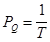
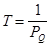
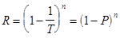
Расчетную вероятность превышения максимального расхода воды на период строительства или реконструкции сооружений рекомендуется назначать исходя из длительности периода временной эксплуатации сооружения n при нормативной степени надежности, соответствующей поверочному расчетному случаю Р для принятого класса сооружения, по таблице.
|
Длительность периода временной эксплуатации сооружения n, годы |
Класс сооружения |
|
|
I |
II |
|
|
1 |
1.0 |
3.0 |
|
2 |
0.5 |
3.0 |
|
3 |
0.3 |
3.0 |
|
5 |
0.2 |
2.0 |
|
10 |
0.1 |
1.0 |
|
100 |
0.01 |
0.1 |
Нормативная степень надежности - вероятность того, что максимальный расход воды Qp, соответствующий поверочному расчетному случаю РQ, не наступит в течение расчетного срока службы сооружения n.
Для сооружений III класса расчетная вероятность превышения расходов воды при длительности временной эксплуатации до 10 лет принимается равной 5 %.
ПРИЛОЖЕНИЕ 6
Обязательное
РАЗМЕРЫ ПРЯМОУГОЛЬНЫХ ОТВЕРСТИЙ ВОДОПРОПУСКНЫХ СООРУЖЕНИЙ, ПЕРЕКРЫВАЕМЫХ ЗАТВОРАМИ
1. Ширину (пролет) и высоту прямоугольных отверстий водопропускных сооружений, перекрываемых затворами, следует принимать по таблице. Соотношения между шириной и высотой отверстий необходимо выбирать исходя из конкретных условий проектирования данного объекта.
2. При соответствующем обосновании допускается отступление от размеров отверстий, приведенных в таблице.
|
Ширина (пролет) отверстий, м |
0,4; 0,6; 0,8; 1; 1,25; 1,5; 2; 2,5; 3; 3,5; 4; 4,5; 5; 5,5; 6; 7; 8; 10; 12; 14; 16; 18; 24; 30 |
|
Высота отверстий, м |
0,6; 0,8; 1; 1,25; 1,5; 1,75; 2; 2,5; 3; 3,5; 4; 4,5; 5; 5,5; 6; 7; 8; 9; 10; 12; 14; 16; 18; 20 |
Примечания: 1. За пролет отверстия принимается минимальный размер между боковыми вертикальными гранями.
2. За высоту отверстий принимается: для поверхностных отверстий - размер от верхней грани порога до верхней кромки обшивки затвора; для глубинных - размер от верхней грани порога до потолка отверстия, изменяемый при плоских затворах в плоскости перемещения, при других типах затворов - по нормали к оси водовода.
ПРИЛОЖЕНИЕ 7
Обязательное
РАСЧЕТНЫЕ УРОВНИ И ГАБАРИТЫ СУДОХОДНЫХ СООРУЖЕНИЙ
1. В настоящем приложении приведены требования к установлению расчетных судоходных уровней воды на каналах и канализированных реках, а также к габаритам каналов и судоходных пролетов плотин. Требования к расчетным уровням и габаритам судоходных шлюзов и примыкающим к ним сооружениям приведены в СНиП II-55-79.
2. На каналах, режим уровней которых определятся колебанием воды на прилегающем участке реки или водохранилища, надлежит принимать расчетный наинизший судоходный уровень воды с обеспеченностью, определенной по ежедневным данным, за многолетний установленный навигационный период, равный, %, для водных путей:
сверхмагистральных 99
магистральных 97
местного значения 95
Расчетный наивысший судоходный уровень воды в открытых каналах необходимо принимать по расходу воды с расчетной вероятностью превышения, %, в многолетнем разрезе для водных путей:
сверхмагистральных 1
магистральных 3
местного значения 5
3. При установлении расчетных наинизших судоходных уровней необходимо учитывать понижения уровня вследствие: многолетней глубинной эрозии русла; дноуглубительных работ; ветрового сгона; предпаводочной сработки водохранилища за период навигации с учетом перспектив ее продления; отливных явлений; неустановившегося движения воды (вызываемого суточным регулированием на ГЭС и ГАЭС, работой насосных станций, шлюзов).
Для шлюзов, имеющих системы питания со сбросом воды вне подходного канала, следует учитывать также перепад уровня от места выпуска воды до конца подходного канала.
На участках канала между судоходными сооружениями (закрытый канал) за расчетный наинизший судоходный уровень воды надлежит принимать расчетный минимальный статический уровень, уменьшенный на величину запаса на волнение от судов, с учетом расхода воды на шлюзование судов, понижения уровня при работе насосных станций и ГАЭС.
4. При установлении расчетных наивысших судоходных уровней воды необходимо учитывать повышение уровня, вызываемого: ветровым нагоном; образованием заторов и зажоров; неустановившимся движением воды (вследствие работы ГЭС, ГАЭС, НС, шлюзов, холостых сбросов); приливными явлениями.
Для шлюзов при гидроузлах с судоходными плотинами расчетным наивысшим уровнем воды считается судоходный уровень, при котором предусмотрен пропуск судов через шлюз (при более высоких уровнях судоходство осуществляется через плотину).
5. Расчетную ширину судоходного канала с двусторонним движением следует определять из условия расхождения встречных расчетных судов и составов с учетом ветрового дрейфа, а на участках бокового отбора или подачи воды - с учетом дрейфа вызываемого течением.
Ширину канала с двусторонним движением судов на уровне расчетной его глубины при расчетном наинизшем судоходном уровне воды необходимо принимать не менее 2,6 расчетной ширины судна (состава), а на участках с односторонним движением - не менее полуторной его ширины.
6. Глубину в каналах, на порогах аварийно-ремонтных заграждений и судоходных шлюзов, а также на порогах судоходных плотин, отсчитанную от расчетного наинизшего судоходного уровня воды, следует определять расчетом, а для речных каналов - принимать не менее 1,3 статической осадки расчетного судна при полной его загрузке.
7. Площадь живого сечения канала при расчетном наинизшем судоходном уровне воды должна быть не менее пятикратной площади миделевого сечения расчетного судна (состава) при полной его загрузке, а отношение миделевого сечения расчетного судна (состава) при полной его загрузке к миделевому сечению камеры судоходного шлюза при том же уровне не более 0,7.
Скорости течения воды в канале, возникающие от стеснения живого сечения судном при его движении, включая периоды обгона и расхождения, с учетом транзитных скоростей течения в канале не должны вызывать размывов дна и берегов и препятствовать нормальному маневрированию судов.
8. На каналах переброски стока и каналах комплексного назначения, имеющих уклон дна и используемых для судоходства, требования пп. 5 и 6 должны быть соблюдены в верховом сечении каждого бьефа при отсутствии течения.
9. Радиусы закруглений канала должны быть не менее пятикратной длины расчетного одиночного самоходного судна, расчетного судна в буксируемом составе или толкаемого состава с жесткой учалкой.
Канал на закруглениях следует принимать уширенным до величины, обеспечивающей беспрепятственный проход двух движущихся навстречу друг другу расчетных судов (составов).
10. Отметка бермы канала в выемке или гребни дамбы канала, сооружаемого в насыпи, должна превышать максимальную отметку наката судовой волны при расчетном наивысшем судоходном уровне воды не менее чем на 0,5 м.
11. Амплитуда волновых колебаний в канале, возникающих при наполнении и опорожнении камер шлюзов, не должна превышать допустимой для нормальной работы оборудования шлюзов, а также нормальных условий стоянки ожидающих шлюзования судов и во всех случаях не превышать 0,4 м.
12. Мосты-каналы должны иметь судоходные габариты не менее габаритов примыкающих участков каналов. Верх стен моста-канала должен быть выше нижнего обносного бруса расчетного порожнего судна при расчетном наивысшем уровне не менее чем на 0,5 м.
13. Ширина отверстия аварийно-ремонтного заграждения должна быть на менее 1,2 ширины канала на расчетной глубине при расчетном наинизшем судоходном уровне воды.
Ширина отверстия судоходной плотины должна обеспечивать односторонний безопасный пропуск вверх и вниз по реке расчетного судна (состава) с учетом очертания судового хода в плане и направления течения на подходе к плотине.
14. Подмостовые габариты сооружений, пересекающих каналы, шлюзы, судоходные плотины, подходы к ним, а также ширину отверстий судоходных плотин необходимо устанавливать в соответствии с ГОСТ 26775-85.
15. Судопропускные сооружения в гидроузлах и подходы к ним на реках следует размещать таким образом, чтобы пропуск воды через водосбросные сооружения и гидроэлектростанции, а на каналах переброски стока - через насосные станции не оказывал неблагоприятного влияния на условия судоходства.
При сбросе через водопропускные сооружения максимальных расходов воды с расчетной вероятностью превышения в многолетнем разрезе для сверхмагистральных и магистральных водных путей не более 2 %, а для водных путей местного значения - не более 5 % скорости течения воды в районе входа в подходные каналы судопропускных сооружений не должны превышать величин, допустимых по условиям судоходства.
ПРИЛОЖЕНИЕ 8
Рекомендуемое
ТИПЫ БЕРЕГОУКРЕПИТЕЛЬНЫХ СООРУЖЕНИЙ И ОСНОВНЫЕ УСЛОВИЯ ИХ ПРИМЕНЕНИЯ
|
Берегоукрепительные сооружения |
Основные условия применения |
|
1. Пляжи |
Необходимость создания или расширения пляжа; обеспечение устойчивости пляжа расчетной ширины в бухтах и на ограниченных участках берега при наличии достаточных запасов карьерного материала |
|
В том числе: |
|
|
а) без сооружений: |
|
|
с периодическим пополнением |
Периодические сезонные размывы пляжа, размывы подводного склона в пределах прибойной и приурезовых зон; при недостаточном естественном поступлении наносов |
|
с постоянным пополнением |
Систематическое отступление береговой линии; практическое отсутствие естественного поступления наносов; на отдельных участках берега небольшой протяженности |
|
б) с сооружениями: |
|
|
бунами |
Размыв подводного склона побережья с галечниковыми и песчаными наносами в пределах прибойной и приурезовой зон; при недостаточном поступлении наносов или при периодическом пополнении пляжа низового участка берега |
|
подводными волноломами |
Размыв подводного склона крутизной до 0,05 в прибойной и приурезовой зонах; при недостаточном естественном поступлении наносов; при косом угле подхода волн (более 15); на оползневых участках в сочетании с искусственным пляжем и при пополнении пляжей низовой части берега |
|
2. Сооружения откосного типа |
Пологие берега, подверженные подмыву и разрушению подводной части |
|
3. Полуоткрытые или полувертикальные сооружения |
Пологие берега при использовании сооружений в качестве причалов; при необходимости сокращения длины укрепляемого откоса; для внутрипортовых и городских набережных |
|
4. Стены |
То же, что в поз. 3, преимущественно для берегов с крутыми откосами |
ПРИЛОЖЕНИЕ 9
Рекомендуемое
ТИПЫ ОГРАДИТЕЛЬНЫХ СООРУЖЕНИЙ И ОСНОВНЫЕ УСЛОВИЯ ИХ ПРИМЕНЕНИЯ
|
Оградительные сооружения |
Основные условия применения |
|
1. Вертикального типа |
Стесненные акватории и необходимость использования внутренней грани оградительного сооружения для устройства причалов |
|
В том числе: |
|
|
из обыкновенных массивов |
Грунты основания типов А и Б. Высота волны до 7 м |
|
из массивов-гигантов и оболочек большого диаметра |
Грунты основания типа В, но при необходимости специально укрепленные для восприятия нагрузок |
|
ячеистые и из парных взаимозаанкеренных свайных или шпунтовых стенок |
Грунты основания типа В. Высота волны до 4 м |
|
2. Откосного типа |
Наличие местного камня. Возможность образования «толчеи» на ограждаемой акватории. Строительство в сейсмических районах |
|
В том числе: |
|
|
из несортированного камня |
Высота волны до 2 м. Высота волны до 4 м - при защите отсыпки уложенными по откосу массивами |
|
из сортированного камня, из наброски обыкновенных (массой до 100 т) массивов и фасонных блоков |
Любые естественные условия |
|
3. Смешанного типа |
Глубина более 20 м. Наличие местных строительных материалов |
|
4. Специального типа |
Частичная естественная защита; малая заносимость акватории, а также временная или дополнительная защита акватории и отдельных объектов |
|
В том числе: |
|
|
сквозные волнозащитные |
Грунты основания, допускающие забивку свай. Высота волны до 4 м, длина - до 80 м, глубина воды 10 - 25 м |
|
плавучие |
Незамерзающие акватории. Высота волны до 3,5 м, длина - до 70 м, глубина воды не менее четырех высот расчетной волны |
|
пневматические |
Высота волны до 3 м, длина - до 40 м |
Примечание. Типы грунтов основания А, Б, В определены в табл. 1 обязательного приложения 2.
ПРИЛОЖЕНИЕ 10
Рекомендуемое
ОСНОВНЫЕ УСЛОВИЯ ПРИМЕНЕНИЯ МНГС
|
Конструкции МНГС |
Основные условия применения |
|||
|
эксплуатационные |
природные |
|||
|
тип грунта |
глубина, м |
ледовый режим |
||
|
1. Искусственные острова: |
||||
|
а) намывные с пляжными откосами и откосами обжатого профиля |
Для бурения скважин, добычи, сбора, хранения, подготовки к транспортированию нефти и газа; для монтажа оборудования, агрегатов. |
А, Б |
До 15 |
Без ограничений |
|
б) насыпные с пляжными откосами и откосами обжатого профиля |
А, Б, В |
« 15 |
То же |
|
|
в) намывные и насыпные, оконтуренные защитной стенкой, шпунтом, ряжевой стенкой, массивами-гигантами и сооружениями другого типа |
Сооружение оборудуется причальными устройствами |
А, Б |
« 30 |
На акваториях с однолетним льдом. В зонах припая - без ограничений |
|
г) ледяные и ледогрунтовые с защищенным и незащищенным контурами |
Разведочное бурение; строительные и транспортные работы |
А, Б А, Б, В |
До 7 « 7 |
На акваториях с ледовым периодом свыше 7 мес |
|
2. Морские стационарные платформы гравитационного типа: |
||||
|
а) ледостойкие, оболочечные, демонтируемые, многократного использования, моноблочные (металлические, железобетонные) |
То же |
А, Б |
« 30 |
Акватории с однолетним льдом в зоне дрейфа и без ограничений в зоне припая |
|
б) ледостойкие, оболочечные, стационарные, моноблочные (металлические, железобетонные) |
Для бурения скважин, добычи, хранения, подготовки к транспортированию нефти и газа |
А, Б |
« 60 |
То же |
|
в) моноблочные многоопорные с хранилищем для нефти вместимостью 100-500 тыс.т |
То же |
А, Б А, Б |
« 100 « 200 |
Толщина ледового покрова до 0,6 м В незамерзающих морях |
|
3. Морские стационарные платформы свайно-гравитационные |
« |
А, Б, В |
« 60 |
Акватории с однолетним льдом и без ограничения в зоне припая |
|
4. Морские стационарные платформы свайно-гравитационные |
||||
|
а) оболочечные, ледостойкие, моноблочные |
« |
А, Б, В |
« 30 |
То же |
|
б) эстакады и приэстакадные площадки |
То же и транспортирование нефти |
А, Б, В |
« 30 |
В незамерзающих морях при расстоянии от берега менее 50 км |
|
в) решетчатые, моноблочные металлические |
То же, что в поз. 2б |
А, Б, В |
« 200 |
В незамерзающих морях |
|
5. Морская самоподъемная платформа в период эксплуатации |
Разведочное бурение, строительно-монтажные работы |
А, Б, В |
« 120 |
В безледовый период |
|
6. Подводные платформы открытого и закрытого типа |
Для бурения, добычи, сбора, хранения, подготовки к транспортированию нефти и газа |
А, Б |
Более 300 |
Без ограничений |
|
7. Морские подводные нефтехранилища |
Сбор, хранение и подготовка к транспортированию нефти |
А, Б |
До 300 |
Без ограничений, в незамерзающих морях |
|
8. Морские нефтегазопроводы |
Транспортирование нефти и газа |
А, Б |
« 300 « 20 |
Без ограничений В замерзающих морях необходимо защищать от воздействия торосов |
Примечание. Типы грунтов основания А, Б, В определены в табл. 1 обязательного приложения 2.
СОДЕРЖАНИЕ